본 포스트는 Janine Witte, Leonard Henckel, Marloes H. Maathuis, Vanessa Didelez의 논문 On Efficient Adjustment in Causal Graphs (Journal of Machine Learning Research 21(174), 2020; arXiv:2002.06825)를 바탕으로, 최적 조정집합(O-집합)에 관한 배경 지식이 없는 독자도 논리적 흐름을 따라갈 수 있도록 재구성한 것입니다. 저자들은 각각 독일 BIPS·브레멘 대학교(Witte, Didelez)와 스위스 ETH 취리히 통계 세미나(Henckel, Maathuis) 소속이며, 이 논문은 Henckel, Perković & Maathuis (2019, 이하 HPM19)가 도입한 O-집합과 Rotnitzky & Smucler (2020, 이하 RS20)의 비모수 확장 위에 직접 쌓아 올린 후속 연구입니다.
논문 정보 (Paper Information)
- 제목: On Efficient Adjustment in Causal Graphs
- 저자: Janine Witte, Leonard Henckel, Marloes H. Maathuis, Vanessa Didelez
- 소속: Leibniz Institute for Prevention Research and Epidemiology—BIPS (Bremen) / University of Bremen / Seminar for Statistics, ETH Zurich
- 출처: Journal of Machine Learning Research, 21(174):1–45, 2020 (Submitted 2/20; Revised 11/20; Published 12/20). arXiv:2002.06825v2 [math.ST]. Editor: Peter Spirtes
- 키워드: causal discovery, causal inference, confounder selection, confounding, efficiency, graphical models, IDA algorithm, model selection, sufficient adjustment set
한 줄 요약 (TL;DR)
“최적 조정집합은 금지 노드를 지워 버린 그래프에서 본 결과변수의 부모집합이다.”
유효 조정집합은 유일하지 않고, 어느 것을 고르느냐에 따라 추정량의 점근분산(asymptotic variance)이 크게 달라집니다. HPM19가 제시한 O-집합(O-set)은 그중 분산을 최소화하는 집합이지만, 그 정의 \(\mathrm{O} = \mathrm{pa}(\mathrm{cn}(\mathbf{X},\mathbf{Y},\mathcal{G})) \setminus \mathrm{forb}(\mathbf{X},\mathbf{Y},\mathcal{G})\)는 계산 규칙에 가까워 직관이 잘 잡히지 않습니다. 이 논문은 금지 사영(forbidden projection) — 금지 노드들을 잠재 사영으로 주변화한 그래프 — 를 새로 정의하고, O-집합이 그 그래프에서 \(\mathbf{Y}\)의 부모집합과 정확히 같음을 증명합니다. 이 하나의 관찰로부터 세 가지가 따라옵니다. ① “결과의 직접 원인을 모두 조정하면 잔차분산이 줄어든다”는 오래된 실무적 직관이 형식적 근거를 얻고, ② 금지 사영 자체가 조정에 필요한 정보를 전부 보존하는 독립적 도구가 되며, ③ 비순응(non-amenable) CPDAG에서도 O-집합을 준국소적(semi-local)으로 계산할 수 있어 IDA 알고리즘을 optimal IDA로 개선할 수 있습니다. 마지막으로, 후진 변수선택(backward selection)이나 Lasso 같은 비그래프적 변수선택 절차가 겨냥하는 표적이 사실 O-집합임을 어떤 가정 아래에서인지까지 밝힙니다.
초록 (Abstract)
논문이 다루는 문제와 기여를 초록 수준에서 먼저 정리해 보겠습니다.
- 문제 설정: 관측 데이터로부터 공변량 조정(covariate adjustment)을 통해 총 인과효과(total causal effect)를 추정하는 문제를 다룹니다. 이상적으로는 인과 구조에 대한 지식을 반영한 인과 그래프에 근거해 조정집합을 고르지만, 유효 조정집합은 유일하지 않습니다.
- 배경: 최근 연구는 ‘최적(optimal)’ 유효 조정집합, 즉 O-집합에 대한 그래프적 기준을 도입했습니다. 주어진 그래프에서 O-집합으로 조정하면 특정 모수적·비모수적 모형에서 다른 어떤 조정집합보다 점근분산이 작습니다.
- 기여 ①(§3): O-집합에 대한 새롭고 더 직관적인 그래프적 특성화를 제시합니다. O-집합은 적절한 잠재 사영 그래프 — 저자들이 금지 사영이라 부르는 — 에서 결과 노드(들)의 부모집합입니다. 중요한 성질은 금지 사영이 공변량 조정을 통한 총 인과효과 추정에 관련된 모든 정보를 보존한다는 점이며, 이 덕분에 금지 사영은 그 자체로 유용한 방법론적 도구가 됩니다.
- 기여 ②(§4): 기존 IDA 알고리즘을 O-집합을 쓰도록 확장하고, 그럼에도 알고리즘이 준국소적으로 남는다고 논증합니다. R 패키지
pcalg에 구현되어 있습니다. - 기여 ③(§5): 단계적 후진 선택(stepwise backward selection) 같은 대중적인 비그래프적 변수선택 알고리즘의 표적 집합(target set)으로 O-집합을 볼 수 있게 해 주는 가정들을 제시합니다.
1. 서론 (Introduction)
1.1 문제의 출발점: 유효한 조정집합이 여럿일 때
관측 데이터 분석의 전형적인 목표는 (다변량일 수도 있는) 처치·노출 \(\mathbf{X}\)가 (역시 다변량일 수도 있는) 결과 \(\mathbf{Y}\)에 미치는 총 인과효과를 추정하는 것입니다.
- 이상적인 상황이라면 우리는 밑바탕의 인과 유향 비순환 그래프(causal DAG)를 완전히 특정할 수 있습니다.
- 그러면 그래프적 조정 기준 — Pearl의 뒷문 기준(back-door criterion)(Pearl, 2009)이나 일반화 조정 기준(generalised adjustment criterion, GAC)(Perković et al., 2015, 2018; Shpitser et al., 2010) — 으로 어떤 공변량 집합이 조정에 유효한지 판정할 수 있습니다.
여기서 이 논문의 문제의식이 시작됩니다.
유효 조정집합이 하나가 아닐 수 있습니다. 결과적으로 얻어지는 추정량들은 모두 일치추정량(consistent)이지만, 그 분산은 상당히 다를 수 있습니다.
일치성만 보면 어느 것을 골라도 상관없어 보이지만, 유한 표본에서 실제로 쓸 수 있는 추정치의 품질은 분산이 좌우합니다. 그러므로 “어느 유효 조정집합을 고를 것인가”는 실질적인 질문입니다.
1.2 조정집합 선택 전략의 계보
유효 조정집합들 가운데 하나를 고르는 접근에는 몇 갈래가 있습니다.
- 최소 조정집합(minimal adjustment set) 전략 (de Luna et al., 2011; Textor & Liśkiewicz, 2011): 유효성을 잃지 않는 선에서 가장 작은 집합을 고릅니다. 연구 설계 단계에서 데이터 수집 비용을 줄이거나, 매칭 추정량처럼 차원이 낮을수록 유리한 방법에 적합합니다.
- 결과 지향(outcome-oriented) 전략 (Brookhart et al., 2006; Lunceford & Davidian, 2004; Shortreed & Ertefaie, 2017): 결과와 연관된 변수를 포함시켜 인과효과 추정량의 분산을 줄이는 것을 겨냥합니다. Witte & Didelez (2019)가 이 전략에 ’결과 지향적’이라는 이름을 붙였으며, 그래프적 지식이 거의 없을 때 특히 인기가 있습니다.
회귀 조정의 분산은 대략 결과의 잔차분산 ÷ 처치의 잔차분산의 형태를 띱니다(뒤의 부록 D에서 정확한 형태 \(\sigma_{yy.xo}/\sigma_{xx.o}\)가 나옵니다).
- 결과 \(Y\)와 강하게 연관된 변수를 조정에 넣으면 분자(결과의 잔차분산)가 줄어 → 효율이 좋아집니다.
- 처치 \(X\)와 강하게 연관된 변수를 조정에 넣으면 분모(처치의 잔차분산)가 줄어 → 효율이 나빠집니다.
이 두 줄이 §3의 논증 전체를 관통하는 직관입니다. “\(\mathrm{pa}(X)\)는 유효하지만 비효율적이고, \(\mathrm{pa}(Y)\)는 효율적이지만 유효하지 않다”는 긴장 관계가 여기서 나옵니다.
결과 지향 접근의 결정적 진전이 HPM19의 O-집합에 대한 그래프적 특성화였습니다.
- HPM19 (Henckel, Perković & Maathuis, 2019): 선형 모형 아래에서 O-집합으로 조정하면 다른 모든 유효 조정집합에 비해 인과효과 추정량의 점근분산이 최소임을 보였습니다.
- RS20 (Rotnitzky & Smucler, 2020): 이 결과를 강화하여, O-집합의 최소분산 성질이 비모수 추정량의 한 부류에 대해서도 유지됨을 보였습니다.
1.3 순응성(amenability)과 비순응 그래프
위 결과들은 DAG뿐 아니라 순응적(amenable) CPDAG(Andersson et al., 1997)와 순응적 maxPDAG(Perković et al., 2017)에도 적용됩니다. 이들은 방향을 정할 수 없는 무향 엣지를 허용하는 더 큰 그래프 부류입니다.
- 순응성(amenability)이 뜻하는 바: 무향 엣지가 있음에도 불구하고, CPDAG(또는 maxPDAG)로부터 조정집합을 식별할 수 있으며 그 집합이 동치류 내 모든 DAG에서 유효하다는 것입니다.
- 비순응이면: 동치류 내 모든 DAG에 대해 공통으로 유효한 조정집합이 존재하지 않습니다(Perković et al., 2018). 따라서 서로 다른 DAG가 서로 다른 참 인과효과를 함의할 수 있습니다.
- 그래도 할 수 있는 일: 가능한 인과효과들의 다중집합(multiset)을 추정할 수 있습니다. 다중집합 안의 모든 효과가 비순응 그래프와 양립한다는 뜻이며, 이것이 Maathuis et al. (2009, 2010)의 IDA 알고리즘입니다.
1.4 이 논문의 세 가지 기여
- ① §3 — 대안적·직관적 특성화: 금지 사영(forbidden projection)이라는 새 개념에 기반해 O-집합을 다시 정의합니다. 이 개념은 교란 조정과 관련해 여러 흥미로운 성질을 갖습니다.
- ② §4 — 비순응 그래프로의 확장: 최적 조정을 IDA 알고리즘에 통합함으로써, O-집합의 적용 범위를 비순응 CPDAG·maxPDAG로 넓힙니다.
- ③ §5 — 비그래프적 변수선택과의 연결: 후진 모형선택 같은 데이터 주도 변수선택 방법의 표적 집합으로 O-집합을 볼 수 있는 조건과 그 방식을 논의합니다.
2. 인과 구조를 알 때의 최적 조정 (Optimal Adjustment for Known Causal Structure)
먼저 설정을 명확히 하고 O-집합을 정의합니다. (대부분의 용어와 형식적 정의는 부록 A에 있고, 여기서는 핵심 개념만 다룹니다.)
2.1 (가능) 인과 노드와 금지 노드
\(\mathcal{G}\)를 인과 DAG, CPDAG 또는 maxPDAG라 하겠습니다.
- 인과 경로(causal path): 경로 \((V_1, \dots, V_m)\)가 모든 \(i \in \{1,\dots,m-1\}\)에 대해 \(V_i \to V_{i+1}\)이면 \(V_1\)에서 \(V_m\)으로 인과적입니다.
- 가능 인과 경로(possibly causal path): \(V_i \leftarrow V_j\) (\(i < j\))인 쌍이 하나도 없는 경로입니다. 즉 “역방향 화살표가 없는” 경로로, 무향 엣지를 포함할 수 있습니다.
- 비인과 경로(non-causal path): 위 둘 중 어느 쪽도 아닌 경로입니다.
- 적정 경로(proper path): \(\mathbf{X}\)에서 \(\mathbf{Y}\)로 가는 경로 중 첫 노드만이 \(\mathbf{X}\)에 속하는 경로입니다. 다변량 처치를 다루기 위해 필요한 개념으로, 경로가 \(\mathbf{X}\) 안을 헤집고 다니는 경우를 배제합니다.
- 후손·가능 후손: \(V_1\)에서 \(V_m\)으로 인과 경로가 있으면 \(V_m\)은 \(V_1\)의 후손(descendant), 가능 인과 경로가 있으면 가능 후손(possible descendant)입니다. 각각 \(\mathrm{de}(V_1, \mathcal{G})\), \(\mathrm{possde}(V_1, \mathcal{G})\)로 표기합니다.
\(\mathcal{G}\)에서 \((\mathbf{X}, \mathbf{Y})\)에 대한 인과 노드(causal nodes) \(\mathrm{cn}(\mathbf{X},\mathbf{Y},\mathcal{G})\)는 \(\mathbf{X}\)에서 \(\mathbf{Y}\)로 가는 적정 인과 경로 위의 노드들이며, \(\mathbf{X}\) 자신은 제외합니다. 가능 인과 노드 \(\mathrm{posscn}(\mathbf{X},\mathbf{Y},\mathcal{G})\)도 같은 방식으로 정의합니다.
\((\mathbf{X},\mathbf{Y})\)와 \(\mathcal{G}\)에 대한 금지 집합(forbidden set)은
\[ \mathrm{forb}(\mathbf{X},\mathbf{Y},\mathcal{G}) = \mathrm{possde}\bigl(\mathrm{posscn}(\mathbf{X},\mathbf{Y},\mathcal{G}),\, \mathcal{G}\bigr) \cup \mathbf{X} \]
로 정의되며, DAG에서는 다음으로 단순해집니다.
\[ \mathrm{forb}(\mathbf{X},\mathbf{Y},\mathcal{G}) = \mathrm{de}\bigl(\mathrm{cn}(\mathbf{X},\mathbf{Y},\mathcal{G}),\, \mathcal{G}\bigr) \cup \mathbf{X} \]
금지 집합의 원소를 금지 노드(forbidden nodes)라 부릅니다. 유효 조정집합은 결코 금지 노드를 포함하지 않음이 알려져 있습니다(Perković et al., 2018).
풀어 말하면, 금지 노드란 매개변수(mediator)와 그 후손들, 그리고 처치 자신입니다. 이들을 조정하면 인과 경로를 막아 버리거나(과대조정 편향) 충돌자를 열어 버립니다(충돌자 편향).
2.2 유효 조정집합과 일반화 조정 기준
처치 집합 \(\mathbf{X}\)와 결과 집합 \(\mathbf{Y}\)를 생각합니다. (비어 있을 수도 있는) 집합 \(\mathbf{Z}\)가 \((\mathbf{X},\mathbf{Y})\)에 대해 유효 조정집합(valid adjustment set)이라 함은, \(\mathbf{X}\)를 개입으로 \(\mathbf{x}\)에 고정했을 때의 \(\mathbf{Y}\)의 개입 분포가 다음과 같이 인수분해된다는 뜻입니다.
\[ f(\mathbf{y} \mid do(\mathbf{x})) = \begin{cases} f(\mathbf{y} \mid \mathbf{x}), & \mathbf{Z} = \emptyset \\[6pt] \displaystyle\int_{\mathbf{z}} f(\mathbf{y} \mid \mathbf{x}, \mathbf{z})\, f(\mathbf{z})\, d\mathbf{z}, & \text{그 외} \end{cases} \tag{1} \]
주어진 인과 DAG · CPDAG · maxPDAG \(\mathcal{G}\)로부터 유효 조정집합을 읽어 내는 도구가 일반화 조정 기준(GAC)입니다.
(Perković et al., 2017, 2018; Shpitser et al., 2010) — Pearl의 뒷문 기준을 일반화한 기준입니다. \(\mathbf{Z}\)가 \(\mathcal{G}\)에서 \((\mathbf{X},\mathbf{Y})\)에 대한 유효 조정집합일 필요충분조건은 다음 셋이 모두 성립하는 것입니다.
- (a) 순응성(amenability): \(\mathbf{X}\)에서 \(\mathbf{Y}\)로 가는 모든 적정 가능 인과 경로가 \(\mathbf{X}\)에서 나가는 유향 엣지로 시작한다.
- (b) 금지 집합 배제: \(\mathbf{Z} \cap \mathrm{forb}(\mathbf{X},\mathbf{Y},\mathcal{G}) = \emptyset\).
- (c) 비인과 경로 차단: \(\mathbf{X}\)에서 \(\mathbf{Y}\)로 가는 모든 적정 비인과 확정 상태(definite-status) 경로가 \(\mathbf{Z}\)에 의해 차단된다.
DAG에서는 모든 경로가 확정 상태이므로 (c)의 단서는 자동으로 만족됩니다.
2.3 두 가지 모형 부류
유효 조정집합이 주어졌을 때 인과효과를 추정하는 두 가지 모형 부류와 전략을 함께 다룹니다. 두 경우 모두 밑바탕에 인과 DAG가 있고 DAG의 노드로 표시된 변수를 전부 관측한다고, 즉 잠재변수가 없다고 가정합니다.
(i) 인과 선형 모형 (HPM19)
인과 선형 모형(causal linear model)은 모든 엣지가 선형 인과효과를 나타내는 인과 DAG입니다. 여기서 \(\mathbf{X} = \{X_1,\dots,X_{k_x}\}\)가 \(\mathbf{Y} = \{Y_1,\dots,Y_{k_y}\}\)에 미치는 (결합) 인과효과는 다음 원소를 갖는 행렬 \(\boldsymbol{\tau}_{yx}\)로 정의됩니다.
\[ (\boldsymbol{\tau}_{yx})_{j,i} = \frac{\partial}{\partial x_i} E(Y_j \mid do(x_1,\dots,x_{k_x})) = E(Y_j \mid do(x_1,\dots,x_i+1,\dots,x_{k_x})) - E(Y_j \mid do(x_1,\dots,x_{k_x})) \]
- 원소 \((\boldsymbol{\tau}_{yx})_{j,i}\)는 \(\mathbf{X}\)에 대한 \(X_i\)의 \(Y_j\)에 대한 통제된 직접효과(controlled direct effect)(Robins & Greenland, 1992; Pearl, 2001)에 대응합니다.
- 더 일반적인 개입의 효과는 \(\boldsymbol{\tau}_{yx}\) 원소들의 함수로 계산합니다. 예컨대 첫 행의 합은 \((x_1,\dots,x_{k_x})\)의 모든 원소를 1씩 올렸을 때 \(Y_1\)에 미치는 효과입니다.
유효 조정집합 \(\mathbf{Z}\)가 주어지면 \(\boldsymbol{\tau}_{yx}\)를 회귀계수 행렬로 다시 쓸 수 있습니다. \(\boldsymbol{\beta}_{yx.z}\)를, \((j,i)\)-원소가 \(Y_j\)를 \(X_i\)와 \(\mathbf{Z} \cup \mathbf{X}_{-i}\) 위로 선형회귀했을 때 \(X_i\)의 계수 \(\beta_{y_j x_i . x_{-i} z}\)인 \((k_y \times k_x)\) 행렬이라 하면 (\(\mathbf{X}_{-i} = \mathbf{X} \setminus \{X_i\}\)),
\[ \boldsymbol{\tau}_{yx} = \boldsymbol{\beta}_{yx.z} \]
가 성립합니다. OLS 추정량 \(\hat{\boldsymbol{\beta}}_{yx.z}\)는 \(\boldsymbol{\beta}_{yx.z}\)의 일치추정량이며, \(\hat{\beta}_{y_j x_i . x_{-i} z}\)의 점근분산을 \(\mathrm{a.var}(\hat{\beta}_{y_j x_i . x_{-i} z})\)로 씁니다.
(ii) 비모수 인과 모형 (RS20)
선형성이나 함수 형태에 대한 다른 가정 없이 인과 DAG만 가정하는 더 일반적인 설정입니다. \(\mathcal{X}\)를 \(\mathbf{X}\)가 취할 수 있는 값들의 집합이라 할 때, \(\mathbf{x}, \mathbf{x}' \in \mathcal{X}\)에 대해 \(\mathbf{X}\)를 \(\mathbf{x}\)로 설정하는 것과 \(\mathbf{x}'\)으로 설정하는 것의 인과효과를 다음 원소를 갖는 벡터 \(\boldsymbol{\Delta}_{yxx'}\)로 정의합니다.
\[ (\boldsymbol{\Delta}_{yxx'})_j = E(Y_j \mid do(\mathbf{x})) - E(Y_j \mid do(\mathbf{x}')) \]
- 비모수 경우에는 인과효과를 \((k_y \times k_x)\) 행렬로 간결하게 표현할 수 없습니다. 효과가 두 값의 쌍에 의존하기 때문입니다.
- RS20은 \(\boldsymbol{\Delta}_{yxx'}\)의 비모수 추정을 위한 정칙 점근선형(regular asymptotically linear, RAL) 추정량의 부류를 고려했습니다. 이 부류에는 비모수적으로 추정된 성향점수를 이용한 역확률 가중(IPW)(Hirano et al., 2003), 비모수 결과 회귀(Hahn, 1998), 더블 머신러닝(Chernozhukov et al., 2018; Smucler et al., 2019)이 포함됩니다.
- 유효 조정집합 \(\mathbf{Z}\)로 조정하여 \(\boldsymbol{\Delta}_{yxx'}\)를 추정하는 이 부류의 추정량을 \(\hat{\boldsymbol{\Delta}}_{yxx'.z}\)로 씁니다. 인과 DAG 모형과 일정한 매끄러움·복잡도 제약 아래에서 이는 일치추정량입니다.
- 핵심: 주어진 \(\mathbf{y}, \mathbf{x}, \mathbf{x}'\)에 대해 이 부류 추정량들의 점근분포는 오직 \(\mathbf{Z}\)에만 의존합니다. 그래서 추정량들을 더 구분하지 않고 점근분산을 \(\mathrm{a.var}(\hat{\Delta}_{y_j xx'.z})\)로 씁니다.
이 성질 덕분에 “어느 추정량을 쓸 것인가”와 “어느 조정집합을 쓸 것인가”가 분리됩니다. RAL 부류 안에서라면 IPW를 쓰든 더블 머신러닝을 쓰든 점근분산은 같고, 오직 \(\mathbf{Z}\)의 선택만이 효율을 좌우합니다. 그러므로 “최적 조정집합”이라는 개념이 추정 방법과 무관하게 잘 정의됩니다.
2.4 정의 1: O-집합 (Definition 1. O-set)
\(\mathbf{X}\)와 \(\mathbf{Y}\)를 DAG, CPDAG 또는 maxPDAG \(\mathcal{G}\)에서 서로소인 노드 집합이라 하자. 그러면 \(\mathrm{O}(\mathbf{X},\mathbf{Y},\mathcal{G})\)는 다음으로 정의된다.
\[ \mathrm{O}(\mathbf{X},\mathbf{Y},\mathcal{G}) = \mathrm{pa}\bigl(\mathrm{cn}(\mathbf{X},\mathbf{Y},\mathcal{G}),\, \mathcal{G}\bigr) \setminus \mathrm{forb}(\mathbf{X},\mathbf{Y},\mathcal{G}) \]
말로 풀면 “인과 노드들의 부모집합에서 금지 노드를 빼낸 것”입니다. 계산 규칙으로는 명확하지만, 왜 하필 이 집합이 최적인지에 대한 직관은 이 정의만으로는 잘 잡히지 않습니다. §3의 재특성화가 필요한 이유가 여기에 있습니다.
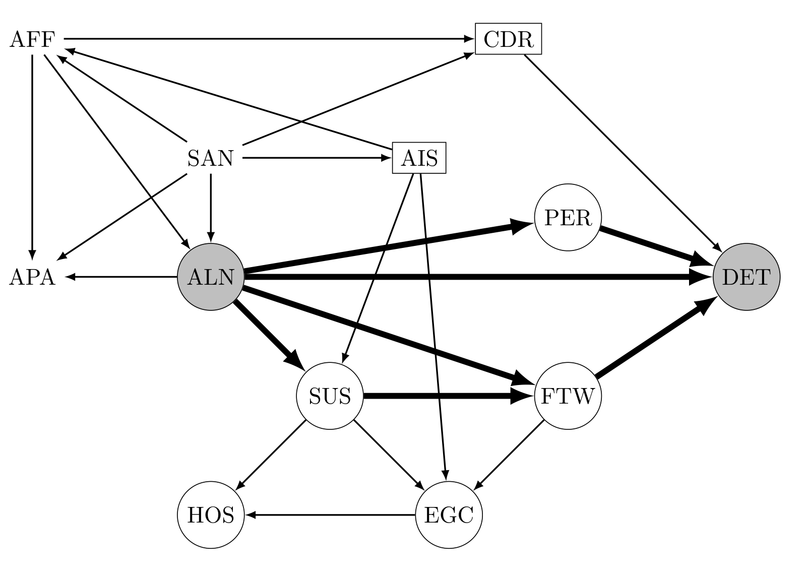
Figure 1을 단계별로 따라가 보겠습니다. 이 DAG는 전문가 지식과 데이터 주도 구조 학습을 결합해 구성된 것이며(van Kampen, 2014), 여기서는 참(ground truth)으로 간주합니다.
- 인과 노드: ALN에서 DET로 가는 적정 인과 경로 위의 노드들(ALN 제외) → \(\mathrm{cn} = \{\)PER, SUS, FTW, DET\(\}\)
- 인과 노드들의 부모: \(\mathrm{pa}(\mathrm{cn}) = \{\)ALN, PER, SUS, FTW, AIS, CDR\(\}\)
- 금지 집합: 인과 노드들의 후손 + 처치 → \(\mathrm{forb} = \{\)ALN, PER, SUS, FTW, DET, HOS, EGC\(\}\)
- O-집합: \(\{\)ALN, PER, SUS, FTW, AIS, CDR\(\} \setminus \{\)ALN, PER, SUS, FTW, DET, HOS, EGC\(\} = \{\)AIS, CDR\(\}\)
다른 유효 조정집합도 물론 존재합니다. 예를 들어 \(\{\)AFF, SAN\(\}\), \(\{\)AIS, CDR, AFF\(\}\), \(\{\)AFF, APA, AIS, CDR, SAN\(\}\) 등이며, 이는 위의 GAC로 확인할 수 있습니다.
많은 응용에서 인과 그래프를 확장하는 것이 가능합니다. 예컨대 \(Y\)의 다른 부모들 중 \(Y\)의 비후손들과 주변적으로(marginally) 독립인 변수들을 추가로 넣을 수 있습니다. 그러면 다른 O-집합이 유도됩니다. 즉 O-집합은 그래프에 어떤 변수를 포함시켰는가에 의존하는 상대적 개념입니다.
또 하나 유의할 점은, 유효 조정집합이 존재하지 않는 경우에도 O-집합 자체는 정의된다는 것입니다. 다만 그런 경우는 실무적으로 관심 대상이 되기 어렵습니다.
2.5 명제 2: O-집합의 유효성 (Proposition 2)
\(\mathbf{X}\)와 \(\mathbf{Y}\)를 인과 DAG, CPDAG 또는 maxPDAG \(\mathcal{G}\)의 노드 집합 \(\mathbf{V}\)의 서로소인 부분집합이라 하자. 다음 두 조건이 성립하면 \(\mathrm{O}(\mathbf{X},\mathbf{Y},\mathcal{G})\)는 \(\mathcal{G}\)에서 \((\mathbf{X},\mathbf{Y})\)에 대한 유효 조정집합이다.
- (i) \(\mathbf{Y} \subseteq \mathrm{possde}(\mathbf{X},\mathcal{G})\)
- (ii) \(\mathcal{G}\)에서 \((\mathbf{X},\mathbf{Y})\)에 대한 유효 조정집합이 존재한다
두 조건을 하나씩 뜯어보겠습니다.
- 조건 (i)은 \(\mathcal{G}\)에 대한 간단한 질의(query)로 확인할 수 있습니다. 만약 \(\mathbf{Y} \not\subseteq \mathrm{possde}(\mathbf{X},\mathcal{G})\)라면, \(\mathbf{X}\)가 \(\mathbf{Y} \setminus \mathrm{possde}(\mathbf{X},\mathcal{G})\)에 미치는 인과효과는 0임을 이미 알고 있습니다. 따라서 일반성을 잃지 않고 \(\mathbf{Y}\) 대신 \(\mathbf{Y} \cap \mathrm{possde}(\mathbf{X},\mathcal{G})\)를 결과 변수 집합으로 삼으면 됩니다.
- 조건 (ii)는 \(\mathrm{O}(\mathbf{X},\mathbf{Y},\mathcal{G})\) 또는 \(\mathbf{V} \setminus \{\mathbf{X},\mathbf{Y}\}\)의 다른 어떤 부분집합이 GAC를 만족하면 충족됩니다.
- Figure 1의 DAG에서는 DET \(\in \mathrm{de}\)(ALN)이 쉽게 확인되므로 조건 (i)이 만족됩니다.
- 중요한 특수 경우: 조건 (i) 아래에서, DAG의 단변량 처치·결과라면 조건 (ii)는 항상 만족됩니다. 처치의 부모집합이 언제나 유효 조정집합이기 때문입니다(Pearl, 2009, p. 72f.).
2.6 명제 3: O-집합의 최적성 (Proposition 3)
Kuroki & Miyakawa (2003), Kuroki & Cai (2004)의 선행 연구 위에 세워진 다음 명제가, 선형 설정과 비모수 설정 모두에서 점근분산의 관점에서 O-집합이 최적임을 확립합니다.
\(\mathbf{X}, \mathbf{Y}\)를 인과 DAG · CPDAG · maxPDAG \(\mathcal{G}\)의 노드 집합 \(\mathbf{V}\)의 서로소인 부분집합으로서 \(\mathbf{Y} \subseteq \mathrm{possde}(\mathbf{X},\mathcal{G})\)를 만족한다고 하자. \(\mathbf{Z}\)를 \((\mathbf{X},\mathbf{Y})\)에 대한 임의의 유효 조정집합, \(\mathbf{O} = \mathrm{O}(\mathbf{X},\mathbf{Y},\mathcal{G})\)라 하자.
(a) (HPM19 Theorem 3.10 (2)) \(\mathbf{V}\)가 \(\mathcal{G}\)와 양립하는 인과 선형 모형을 따르면, 모든 \(X_i \in \mathbf{X}\)와 \(Y_j \in \mathbf{Y}\)에 대해
\[ \mathrm{a.var}(\hat{\beta}_{y_j x_i . x_{-i} o}) \le \mathrm{a.var}(\hat{\beta}_{y_j x_i . x_{-i} z}) \]
(b) (RS20 Theorem 2) 모든 \(Y_j \in \mathbf{Y}\)와 벡터 쌍 \(\mathbf{x}, \mathbf{x}' \in \mathcal{X}\)에 대해
\[ \mathrm{a.var}(\hat{\Delta}_{y_j xx'.o}) \le \mathrm{a.var}(\hat{\Delta}_{y_j xx'.z}) \]
말로 옮기면 이렇습니다.
- 주어진 인과 선형 모형에서, O-집합은 모든 유효 조정집합 가운데 OLS 추정량의 점근분산을 가장 작게 만듭니다.
- 선형성을 가정할 수 없다면, O-집합은 정칙 점근선형 추정량에 대해 가장 작은 분산을 줍니다.
Figure 1에 적용해 보겠습니다. Figure 1이 인과 선형 모형을 나타낸다고 합시다.
- DET를 ALN과 O-집합 \(\{\)AIS, CDR\(\}\) 위로 선형회귀해 효과를 추정하면, DET를 ALN과 다른 유효 조정집합 — 예컨대 ALN의 부모집합 \(\{\)AFF, SAN\(\}\) — 위로 회귀하는 것보다 점근분산이 작습니다.
- 선형성을 완화하더라도, 추정량이 정칙 점근선형 부류에 속하기만 하면 \(\{\)AIS, CDR\(\}\)에 대한 비모수 조정이 다른 어떤 유효 조정집합보다 효율적입니다.
3. 금지 사영을 통한 O-집합 (The O-Set via Forbidden Projection)
이 절에서 O-집합의 대안적이고 직관적인 구성을 제시합니다. 명료함을 위해 DAG로 한정하며, 순응적 maxPDAG로의 일반화는 부록 C에서 다룹니다.
3.1 동기: 유효성 · 계산 용이성 · 효율성의 삼각형
쓸모 있는 조정집합이 갖추어야 할 것을 저자들은 셋으로 놓습니다.
| 요건 | 의미 |
|---|---|
| ① 유효성 (valid) | GAC를 만족해 편향 없는 식별을 보장한다 |
| ② 계산 용이성 (easy to compute) | 그래프로부터 간단한 질의로 읽어 낼 수 있다 |
| ③ 효율성 (efficient) | 추정량의 점근분산이 작다 |
단변량 처치 \(X\)와 결과 \(Y\)를 생각하고, \(Y\)가 \(X\)의 조상이 아니라고 하겠습니다. 두 가지 자연스러운 후보를 차례로 검토합니다.
- 후보 1 — \(\mathrm{pa}(X)\) (처치의 부모집합)
- ② 계산 용이: 결정하기 쉽습니다.
- ① 유효: 유효함이 보장됩니다(Pearl, 2009, p. 72f.).
- ③ 효율 ✗: 처치와 강하게 연관된 변수를 조정하면 OLS를 비롯한 추정량의 효율이 떨어진다는 것이 잘 알려져 있습니다. 따라서 처치의 부모집합으로 조정하는 것은 다른 유효 조정집합에 비해 전형적으로 비효율적입니다.
- 후보 2 — \(\mathrm{pa}(Y)\) (결과의 부모집합)
- ③ 효율 ✓: 반대로 결과와 강하게 연관된 변수를 회귀 조정하면 효율이 개선된다는 것도 잘 알려져 있습니다. 그러므로 결과의 부모집합은 자연스럽고 결정하기도 쉬운, 더 효율적인 대안으로 보입니다.
- ① 유효 ✗: 그러나 \(\mathrm{pa}(Y)\)가 유효 조정집합이라는 보장이 없습니다. 금지 노드, 구체적으로는 처치와 결과 사이의 매개변수를 포함할 수 있기 때문입니다.
Figure 1에서 확인해 보겠습니다.
- FTW는 결과 DET의 부모이지만 동시에 처치 ALN의 후손입니다. 따라서 조정에 쓸 수 없습니다.
- 그렇다면 그런 노드만 \(\mathrm{pa}(Y)\)에서 빼면 되지 않을까요? 일반적으로는 그렇지 않습니다. Figure 1에서 FTW와 PER을 빼고 남는 CDR 단독으로는 유효 조정집합이 되지 못합니다. 열린 교란 경로가 남아 있기 때문입니다.
\[ \text{ALN} \leftarrow \text{SAN} \to \text{AIS} \to \text{SUS} \to \text{FTW} \to \text{DET} \]
\(\mathrm{pa}(Y)\)를 쓰자는 직관은 틀리지 않았습니다. 다만 그것을 원래 그래프가 아니라 수정된 그래프에 적용해야 합니다.
금지 노드들을 주변화(marginalise), 즉 사영(project)해 버리면, 그 그래프에서 \(\mathbf{Y}\)의 부모집합이 정확히 O-집합과 일치하고, 따라서 명제 3에 의해 점근분산 최소 추정량을 보장합니다.
이 특성화는 유효성 · 그래프적 단순성 · 효율성을 한꺼번에 결합합니다.
위 예에서 무슨 일이 일어나는지 미리 보면 이렇습니다. 금지 노드 SUS와 FTW를 지우면 잠재 사영의 규칙에 의해 AIS \(\to\) DET 엣지가 새로 생깁니다. 그러면 AIS가 새 그래프에서 DET의 부모가 되어 조정집합에 포함되고, 위 교란 경로가 차단됩니다.
3.2 정의 4: 잠재 사영 (Definition 4. Latent Projection)
\(\mathcal{D}\)를 노드 집합 \(\mathbf{W} \cup \mathbf{L}\) (\(\mathbf{W} \cap \mathbf{L} = \emptyset\))을 갖는 DAG라 하자. \(\mathbf{L}\) 위에서 \(\mathbf{W}\)로의 잠재 사영 \(\mathcal{D}(\mathbf{W})\)는 노드 집합이 \(\mathbf{W}\)이고 엣지가 다음과 같은 그래프이다. 서로 다른 노드 \(W_i, W_j \in \mathbf{W}\)에 대해,
- \(\mathcal{D}(\mathbf{W})\)가 유향 엣지 \(W_i \to W_j\)를 포함할 필요충분조건은, \(\mathcal{D}\)가 모든 비-끝점 노드가 \(\mathbf{L}\)에 속하는 유향 경로 \(W_i \to \cdots \to W_j\)를 포함하는 것이다.
- \(\mathcal{D}(\mathbf{W})\)가 양방향 엣지 \(W_i \leftrightarrow W_j\)를 포함할 필요충분조건은, \(\mathcal{D}\)가 비-끝점 노드를 최소 하나 갖는 \(W_i \leftarrow \cdots \to W_j\) 형태의 경로로서 모든 비-끝점 노드가 비-충돌자이고 \(\mathbf{L}\)에 속하는 것을 포함하는 것이다.
두 조항의 의미를 나누어 보겠습니다.
- 조항 1 (유향 엣지): 잠재 노드들만을 거쳐 가는 인과 경로를 하나의 화살표로 압축합니다. “\(W_i\)가 (보이지 않는 중간 단계를 거쳐) \(W_j\)의 원인이다”를 보존합니다.
- 조항 2 (양방향 엣지): 잠재 노드 중 하나가 공통 원인이 되어 \(W_i\)와 \(W_j\)를 연결하는 상황을 하나의 양쪽 화살표로 압축합니다. “\(W_i\)와 \(W_j\)가 관측되지 않는 교란자를 공유한다”를 보존합니다.
잠재 사영 \(\mathcal{D}(\mathbf{W})\)에서는 두 노드가 유향 엣지와 양방향 엣지로 동시에 연결될 수 있습니다. 즉 결과 그래프는 단순 그래프(simple graph)가 아닐 수 있습니다. \(W_i\)가 \(W_j\)의 원인이면서 동시에 잠재 교란자를 공유하는 상황이 그렇습니다.
독립성 관계는 m-분리 기준(Richardson, 2003)으로 읽어 냅니다. 서로소인 \(\mathbf{A}, \mathbf{B}, \mathbf{C} \subset \mathbf{W}\)에 대해, \(\mathcal{D}\)에서 \(\mathbf{A}\)와 \(\mathbf{B}\)가 \(\mathbf{C}\)가 주어졌을 때 d-분리될 필요충분조건은 \(\mathcal{D}(\mathbf{W})\)에서 m-분리되는 것입니다(Richardson et al., 2017). 정보 손실이 없다는 뜻입니다.
3.3 정의 5: 금지 사영 (Definition 5. Forbidden Projection)
O-집합의 정의를 위해서는, 금지 노드들 위에서 사영하되 \(\mathbf{X}\)와 \(\mathbf{Y}\)는 남겨 두어야 합니다.
\(\mathcal{D}\)를 노드 집합 \(\mathbf{V}\)를 갖는 DAG라 하고, \(\mathbf{X}\)와 \(\mathbf{Y}\)를 \(\mathbf{V}\)의 서로소인 부분집합이라 하자. 그래프
\[ \mathcal{D}^{XY} = \mathcal{D}\bigl((\mathbf{V} \setminus \mathrm{forb}(\mathbf{X},\mathbf{Y},\mathcal{D})) \cup \mathbf{X} \cup \mathbf{Y}\bigr) \]
를 \((\mathbf{X},\mathbf{Y})\)에 대한 \(\mathcal{D}\)의 금지 사영이라 부른다.
즉 사영해 없애는 대상은 \(\mathrm{forb}(\mathbf{X},\mathbf{Y},\mathcal{D}) \setminus (\mathbf{X} \cup \mathbf{Y})\)입니다. \(\mathbf{X}\)와 \(\mathbf{Y}\)는 금지 집합에 속하더라도 그래프에 남깁니다 — 이들이야말로 우리가 효과를 묻고 있는 대상이기 때문입니다.
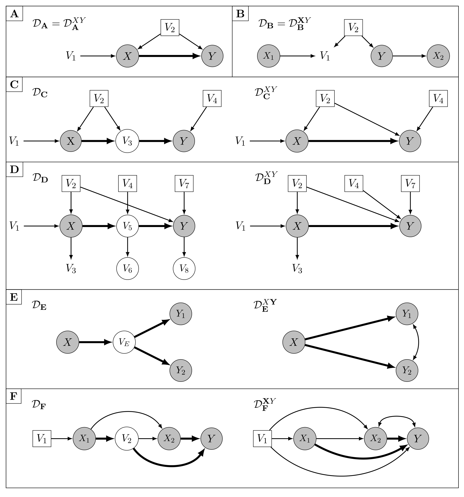
3.4 금지 사영의 성질 (명제 6 · 7 · 8)
저자들은 금지 사영을 O-집합의 대안적 특성화를 위해 도입했지만, 그 자체로도 유용한 도구라고 강조합니다. 특히 다음에서 보듯 인과 DAG의 금지 사영은 조정을 통한 인과효과 추정에 관련된 모든 정보를 보존합니다. (모든 증명은 부록 B에 있고, maxPDAG로의 일반화는 부록 C에 있습니다.)
\(\mathbf{X}\)와 \(\mathbf{Y}\)를 인과 DAG \(\mathcal{D}\)에서 서로소인 노드 집합으로서 \(\mathbf{Y} \subseteq \mathrm{de}(\mathbf{X},\mathcal{D})\)라 하자. 그러면 \(\mathcal{D}\)에서 \((\mathbf{X},\mathbf{Y})\)에 대한 유효 조정집합이 존재할 필요충분조건은, \(\mathcal{D}^{XY}\)에서 어떤 \(X \in \mathbf{X}\)와 \(Y \in \mathbf{Y}\) 사이에도 양방향 엣지가 없는 것이다.
- Figure 2에서 유효 조정집합은 패널 F를 제외한 모든 패널에서 존재합니다.
- 패널 F에서 \(\mathbf{X} = \{X_1, X_2\}\)의 \(Y\)에 대한 효과는 조정으로는 식별되지 않지만, 더 일반적인 g-공식(Robins, 1986; Dawid & Didelez, 2010), Tian & Pearl (2003)의 알고리즘, 또는 Nandy et al. (2017)의 방법으로는 식별됩니다. 선형·비모수 경우의 효율적 조정에 관해서는 각각 Guo & Perković (2020)과 RS20을 참고할 수 있습니다.
- 패널 E의 \(Y_1 \leftrightarrow Y_2\) 양방향 엣지는 유효 조정집합의 정의나 판정에 아무 관련이 없습니다. 명제 6이 요구하는 것은 처치 노드와 결과 노드 사이의 양방향 엣지가 없는 것이지, 결과 노드끼리의 양방향 엣지가 아닙니다.
\(\mathbf{X}\)와 \(\{Y\}\)를 인과 DAG \(\mathcal{D}\)에서 서로소인 노드 집합으로서 \(Y \in \mathrm{de}(\mathbf{X},\mathcal{D})\)라 하자. 그러면 \(\mathcal{D}^{XY}\)가 인과 DAG일 필요충분조건은, \(\mathcal{D}\)에서 \((\mathbf{X}, Y)\)에 대한 유효 조정집합이 존재하는 것이다.
즉 결과가 단일 노드이고 유효 조정집합이 존재하는 경우라면, 금지 사영은 (양방향 엣지가 없으므로) 그 자체가 인과 DAG이며 해석이 특히 쉽습니다. 우리가 익숙한 DAG의 모든 도구를 그대로 쓸 수 있다는 뜻입니다.
\(\mathbf{X}, \mathbf{Y}, \mathbf{Z}\)를 인과 DAG \(\mathcal{D}\)의 서로소인 노드 집합이라 하자. 그러면 \(\mathbf{Z}\)가 \(\mathcal{D}\)에서 \((\mathbf{X},\mathbf{Y})\)에 대한 유효 조정집합일 필요충분조건은, \(\mathbf{Z}\)가 \(\mathcal{D}^{XY}\)에서도 \((\mathbf{X},\mathbf{Y})\)에 대한 유효 조정집합인 것이다.
이것이 “금지 사영이 조정 관련 정보를 전부 보존한다”는 주장의 정확한 내용입니다. 원래 그래프에서 유효한 집합은 사영에서도 유효하고, 그 역도 성립합니다. 그러므로 어느 쪽 그래프에서 GAC를 확인해도 같은 답을 얻습니다.
3.5 정의 9와 명제 10: O\(^*\)-집합과 주 결과
\(\mathbf{X}\)와 \(\mathbf{Y}\)를 DAG \(\mathcal{D}\)에서 서로소인 노드 집합이라 하자. \(\mathrm{O}^*(\mathbf{X},\mathbf{Y},\mathcal{D})\)를 다음으로 정의한다.
\[ \mathrm{O}^*(\mathbf{X},\mathbf{Y},\mathcal{D}) = \mathrm{pa}(\mathbf{Y}, \mathcal{D}^{XY}) \setminus (\mathbf{X} \cup \mathbf{Y}) \]
말로 옮기면 “금지 사영 \(\mathcal{D}^{XY}\)에서 \(\mathbf{Y}\)의 부모들 중 처치 노드와 결과 노드를 제외한 집합”입니다. 그리고 이 논문의 주 결과가 다음입니다.
\(\mathbf{X}\)와 \(\mathbf{Y}\)를 DAG \(\mathcal{D}\)의 노드 집합 \(\mathbf{V}\)의 서로소인 부분집합으로서 \(\mathbf{Y} \subseteq \mathrm{de}(\mathbf{X},\mathcal{D})\)라 하자. 그러면
\[ \mathrm{O}(\mathbf{X},\mathbf{Y},\mathcal{D}) = \mathrm{O}^*(\mathbf{X},\mathbf{Y},\mathcal{D}) \]
- 이로부터 명제 3의 O-집합에 관한 모든 진술이 O\(^*\)-집합에 대해서도 자명하게 성립합니다. 즉 \(\mathrm{pa}(\mathbf{Y}, \mathcal{D}^{XY})\)로 조정하는 것이 선형·비모수 설정 모두에서 점근분산을 최소화합니다.
- 조건 \(\mathbf{Y} \subseteq \mathrm{de}(\mathbf{X},\mathcal{D})\)는 심각한 제약이 아닙니다. 그렇지 않다면 \(\mathbf{Y} \setminus \mathrm{de}(\mathbf{X},\mathcal{D})\)에 대한 효과가 0임을 이미 알고 있으므로, \(\mathbf{Y} \cap \mathrm{de}(\mathbf{X},\mathcal{D})\)에 대한 효과만 생각하면 됩니다.
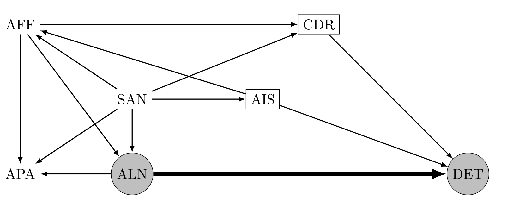
Figure 3에서 O-집합 \(\{\)AIS, CDR\(\}\)(네모)은 정확히 DET의 부모집합입니다. 앞서 언급한 다른 유효 조정집합들 — \(\{\)AFF, SAN\(\}\), \(\{\)AIS, CDR, AFF\(\}\), \(\{\)AFF, APA, AIS, CDR, SAN\(\}\) — 은 모두 덜 효율적입니다. 명제 8 덕분에 이들의 유효성은 원래 DAG(Figure 1)에서 확인하든 금지 사영(Figure 3)에서 확인하든 같은 답을 줍니다.
3.6 요약: 금지 사영 활용 절차
지금까지의 결과를 하나의 절차로 정리하면 다음과 같습니다.
| 단계 | 할 일 | 근거 |
|---|---|---|
| ① | 원래 그래프에서 \(\mathbf{Y} \subseteq \mathrm{de}(\mathbf{X},\mathcal{D})\)인지 확인한다 | 명제 2 (i) |
| ② | 금지 사영 \(\mathcal{G}^{XY}\)를 구성하고 양방향 엣지를 확인한다 | 정의 5 |
| ③ | \(\mathbf{X}\)의 노드와 \(\mathbf{Y}\)의 노드 사이에 양방향 엣지가 있으면 → 조정으로는 식별 불가 | 명제 6 |
| ④ | 없으면 \(\mathcal{G}^{XY}\)가 유효 조정집합 결정에 필요한 모든 정보를 담고 있다 | 명제 8 |
| ⑤ | 특히 O-집합 = \(\mathbf{Y}\)의 부모집합으로 즉시 읽어 낸다 | 정의 9, 명제 10 |
| ⑥ | \(\mathbf{Y}\)가 단일 노드이면 \(\mathcal{G}^{XY}\) 자체가 인과 DAG이므로 해석이 직관적이다 | 명제 7 |
4. IDA 알고리즘에서의 최적 조정 (Optimal Adjustment in the IDA Algorithm)
§2와 §3에서는 DAG에서의 최적 조정을 다루었고, 부록 C에서 순응적 maxPDAG(순응적 CPDAG를 포함합니다)로 일반화합니다. 이 절에서는 비순응 CPDAG와 maxPDAG를 다룹니다.
다시 확인하면, maxPDAG \(\mathcal{G}\)가 \((\mathbf{X}, Y)\)에 대해 순응적이라 함은 \(\mathbf{X}\)에서 \(Y\)로 가는 모든 적정 가능 인과 경로가 \(\mathbf{X}\)에서 나가는 유향 엣지로 시작한다는 뜻입니다.
4.1 왜 비순응 그래프인가
CPDAG와 maxPDAG가 관심 대상인 이유는 이들이 인과 탐색 알고리즘의 출력물이기 때문입니다.
- 이 절에서 집중하는 가우시안 오차항을 갖는 선형 모형 아래에서는 일반적으로 유일한 DAG를 학습할 수 없습니다.
- 인과충분성(causal sufficiency)과 충실성(faithfulness)을 추가로 가정하더라도(Spirtes et al., 2000), 기껏해야 DAG들의 마르코프 동치류를 학습할 수 있을 뿐이며, 이는 CPDAG로 유일하게 표현됩니다(Andersson et al., 1997).
- 변수들 사이의 일부 인과 관계에 대한 추가 지식, 개입 데이터, 또는 다른 모형 제약이 주어지면 이 동치류의 세분화(refinement)를 얻을 수 있고, 이는 maxPDAG로 유일하게 표현됩니다(Meek, 1995; Perković et al., 2017).
CPDAG·maxPDAG \(\mathcal{G}\)가 표현하는 DAG들의 집합을 \([\mathcal{G}]\)로 씁니다. 엣지의 해석은 다음과 같습니다.
| 엣지 | 의미 |
|---|---|
| \(A \to B\) (유향) | 이 엣지가 \([\mathcal{G}]\)의 모든 DAG에 존재한다 |
| \(A - B\) (무향) | \(A\)와 \(B\)는 \([\mathcal{G}]\)의 모든 DAG에서 인접하며, \(A \to B\)인 DAG와 \(A \leftarrow B\)인 DAG가 각각 최소 하나씩 존재한다 |
이 절에서는 단변량 노출 \(X\)와 단변량 결과 \(Y\)를 가정합니다.
주어진 CPDAG·maxPDAG \(\mathcal{G}\)에 대해, \(X\)의 \(Y\)에 대한 참 인과효과는 \([\mathcal{G}]\)의 DAG마다 다를 수 있습니다. 구체적으로 Perković (2020, Proposition 4.2)는 다음을 보였습니다.
\(Y \notin \mathrm{pa}(X, \mathcal{G})\)를 가정할 때, \(X\)의 \(Y\)에 대한 참 인과효과가 \([\mathcal{G}]\)의 DAG들에 걸쳐 달라질 필요충분조건은 \(\mathcal{G}\)가 \((X,Y)\)에 대해 비순응적인 것, 즉 \(X\)에서 \(Y\)로 가는 가능 인과 경로가 무향 엣지로 시작하는 것이다.
따라서 \(\mathcal{G}\)가 비순응적이면, 우리가 기껏 할 수 있는 것은 \([\mathcal{G}]\)의 각 DAG에 하나씩 대응하는 가능한 인과효과들의 다중집합 \((\tau_{yx}(\mathcal{D}))_{\mathcal{D} \in [\mathcal{G}]}\)를 결정하는 것입니다.
다중집합(multiset)은 같은 원소를 여러 번 담을 수 있습니다. 예컨대 \([\mathcal{G}]\)가 5개의 DAG를 포함하고 그중 셋이 효과 0을, 둘이 효과 1.2를 함의하면 \((\tau_{yx}(\mathcal{D}))_{\mathcal{D} \in [\mathcal{G}]} = \{0, 0, 0, 1.2, 1.2\}\)입니다.
- 하나의 숫자보다 정보가 적은 것은 분명하지만, 이 다중집합도 유용한 통계량을 줍니다.
- 특히 최소 절댓값(minimum absolute value)은 인과효과 크기의 하한입니다. 이 값이 0이 아니면 “\(X\)가 \(Y\)에 어떤 효과를 갖는다”고 말할 수 있습니다.
- 문제: \([\mathcal{G}]\)의 모든 DAG를 열거하는 것은 무향 엣지가 많으면 중간 크기의 \(\mathcal{G}\)에 대해서도 계산적으로 매우 비쌉니다.
4.2 국소 IDA와 준국소 IDA (Local and semi-local IDA)
Maathuis et al. (2009)은 이 문제의 복잡도를 다음과 같이 줄이자고 제안했습니다.
핵심 관찰: \(\mathcal{D}, \mathcal{D}' \in [\mathcal{G}]\)가 \(\mathrm{pa}(X,\mathcal{D}) = \mathrm{pa}(X,\mathcal{D}') = \mathbf{P}\)이고 \(Y \notin \mathbf{P}\)를 만족한다고 합시다. 처치의 부모집합은 유효 조정집합이므로(Pearl, 2009, p. 72f.),
\[ \tau_{yx}(\mathcal{D}) = \tau_{yx}(\mathcal{D}') = \tau_{yx}(\mathbf{P}) \]
가 성립합니다. 여기서 \(\tau_{yx}(\mathbf{P})\)는 \(Y\)를 \(X\)와 \(\mathbf{P}\) 위로 선형회귀했을 때 \(X\)의 계수 \(\beta_{yx.p}\)입니다.
- \(\mathcal{P} = \{\mathrm{pa}(X,\mathcal{D}) \mid \mathcal{D} \in [\mathcal{G}]\}\)를 \(\mathcal{G}\)와 양립하는 \(X\)의 가능한 부모집합들의 집합이라 하면, \((\tau_{yx}(\mathbf{P}))_{\mathbf{P} \in \mathcal{P}}\)는 \((\tau_{yx}(\mathcal{D}))_{\mathcal{D} \in [\mathcal{G}]}\)와 동일한 서로 다른 값들을 담으면서 \(|\mathcal{P}| \le |[\mathcal{G}]|\)입니다.
- Maathuis et al. (2009)은 \(\mathcal{P}\)를 CPDAG로부터 모든 DAG를 열거하지 않고 국소적으로 결정할 수 있음을 보였고, 이로부터 local IDA(local Intervention calculus when the DAG is Absent)를 제안했습니다.
- Perković et al. (2017)이 이를 maxPDAG로 준국소적(semi-local)으로 일반화했습니다.
Algorithm 1이 maxPDAG에 대한 준국소 IDA입니다. \(\mathrm{sib}(X,\mathcal{G})\)를 \(\mathcal{G}\)에서 \(X\)와 무향 엣지를 공유하는 노드 집합이라 하겠습니다.
Algorithm 1: Local or semi-local IDA (Maathuis et al., 2009; Perković et al., 2017)
────────────────────────────────────────────────────────────────────────────────
입력 : 노드 집합 V = {V_1, ..., V_p, X, Y}를 갖는 CPDAG 또는 maxPDAG G,
V_1, ..., V_p, X, Y에 대한 i.i.d. 관측치
출력 : 추정치들의 다중집합 Θ̂
1: Θ̂ ← ∅
2: sib(X, G) ← {V ∈ V : G에서 X − V}
3: for all S ⊆ sib(X, G) do # X의 이웃 방향 조합을 전부 순회
4: LocalBg ← ∅
5: 모든 S ∈ S 에 대해 {S → X} 를 LocalBg 에 추가
6: 모든 S ∈ sib(X, G) \ S 에 대해 {S ← X} 를 LocalBg 에 추가
7: G' ← ConstructMaxPDAG(G, LocalBg) # Meek 규칙으로 확장 (준국소 단계)
8: if G' ≠ "FAIL" then # 원 그래프와 양립하는 방향인지 검사
9: if Y ∉ pa(X, G') then
10: Y 를 X ∪ pa(X, G') 위로 회귀하고 X의 추정계수를 Θ̂ 에 추가
11: else
12: 0 을 Θ̂ 에 추가
13: end if
14: end if
15: end for
16: return Θ̂
────────────────────────────────────────────────────────────────────────────────복잡도 감소가 일어나는 지점을 짚어 보겠습니다.
- 알고리즘은 모든 부분집합 \(\mathbf{S} \subseteq \mathrm{sib}(X,\mathcal{G})\)를 순회하며, 먼저 \(\mathrm{pa}(X,\mathcal{G}') = \mathbf{P} = \mathrm{pa}(X,\mathcal{G}) \cup \mathbf{S}\)가 되도록 그래프 \(\mathcal{G}'\)을 구성합니다. 여기서 \(X\)에 인접한 엣지만 방향지으면 됩니다.
- 추가된 방향이 원래 그래프 \(\mathcal{G}\)와 양립하는지 확인하기 위해, Meek의 방향 결정 규칙(Meek, 1995; Perković et al., 2017; 부록 A의 Figure 8)을 적용해 그래프를 maxPDAG로 확장하려 시도합니다(
ConstructMaxPDAG). - 이 단계가 “준국소적”인 이유: \(X\)에 인접하지 않은 엣지들도 방향이 정해져야 하기 때문입니다. 완전한 국소가 아니라 준국소인 것은 이 때문입니다.
- 성공하면 \(\hat{\beta}_{yx.p}\)가 가능한 인과효과 추정치로 추가됩니다.
Nandy et al. (2017)은 준국소 IDA를 집합 \(\mathbf{X}\)와 \(\mathbf{Y}\)로 더 일반화했습니다. 다만 이 절차는 가능한 인과효과 추정에 회귀 조정을 쓰지 않으므로 이 논문의 결과와 직접 관련되지는 않습니다.
4.3 Optimal IDA (§4.1)
HPM19는 \(X\)의 부모집합이 — 준국소 IDA가 조정에 쓰는 바로 그 집합이 — 가장 비효율적인 유효 조정집합 중 하나임을 확립했습니다. 그러므로 IDA 안에서 \(\mathrm{pa}(X,\mathcal{D})\)를 O-집합으로 바꾸는 것이 추정 정밀도를 높이는 좋은 아이디어로 보입니다.
그러나 핵심 질문이 남습니다.
가능한 O-집합들을 여전히 준국소적으로 결정할 수 있는가?
형식적으로, 목표는 다중집합 \((\tau_{yx}(\mathbf{O}))_{\mathbf{O} \in \mathcal{O}}\)를 추정하는 것입니다. 여기서 \(\mathcal{O} = \{\mathrm{O}(X,Y,\mathcal{D}) \mid \mathcal{D} \in [\mathcal{G}]\}\)이고, 표기를 다소 남용하여 \(Y \notin \mathrm{possde}(X,\mathcal{D})\)이면 \(\tau_{yx}(\mathbf{O}) = 0\)으로 둡니다. 앞서와 마찬가지로, 같은 O-집합을 갖는 두 DAG \(\mathcal{D}, \mathcal{D}'\)에 대해 \(\mathrm{O}(X,Y,\mathcal{D}) = \mathrm{O}(X,Y,\mathcal{D}') = \mathbf{O}\)이면 \(\tau_{yx}(\mathcal{D}) = \tau_{yx}(\mathcal{D}') = \tau_{yx}(\mathbf{O})\)입니다.
언뜻 보면 불가능해 보입니다. 정의 1과 정의 9에 따르면 O-집합을 찾기 위해 인과 노드, 그 부모들, 금지 노드 — 또는 금지 사영 전체 — 가 필요하기 때문입니다. 이는 명백히 전역적 정보로 보입니다.
그런데 다음이 성립합니다.
\(X\)와 관련된 모든 엣지의 방향이 주어지면, 즉 \(\mathbf{P}\)가 주어지면, Meek의 규칙을 적용하는 것만으로 \(X\)의 모든 후손이 드러나고, 그 결과 모든 인과 노드, 그들의 부모, 그리고 금지 노드가 전부 드러납니다 (부록 C의 Lemma 18 참조).
따라서 Meek의 규칙을 매개로 가능한 부모집합과 가능한 O-집합 사이에 대응 관계가 존재합니다. 그러므로 \(\mathcal{O}\)는 \(\mathcal{P}\)와 거의 같은 방식으로 준국소적으로 결정될 수 있습니다.
이로부터 저자들은 Algorithm 2, 즉 optimal IDA를 제안합니다. R 패키지 pcalg(Kalisch et al., 2012, 2019)에 구현되어 있습니다.
Algorithm 2: Optimal IDA
────────────────────────────────────────────────────────────────────────────────
입력 : 노드 집합 V = {V_1, ..., V_p, X, Y}를 갖는 CPDAG 또는 maxPDAG G,
V_1, ..., V_p, X, Y에 대한 i.i.d. 관측치
출력 : 추정치들의 다중집합 Θ̂
1: Θ̂ ← ∅
2: sib(X, G) ← {V ∈ V : G에서 X − V}
3: for all S ⊆ sib(X, G) do
4: LocalBg ← ∅
5: 모든 S ∈ S 에 대해 {S → X} 를 LocalBg 에 추가
6: 모든 S ∈ sib(X, G) \ S 에 대해 {S ← X} 를 LocalBg 에 추가
7: G' ← ConstructMaxPDAG(G, LocalBg) # optimal IDA는 이 단계에 결정적으로 의존
8: if G' ≠ "FAIL" then
9: if Y ∈ possde(X, G') then # ← Algorithm 1의 Y ∉ pa(X,G')보다 강한 조건
10: Y 를 X ∪ O(X, Y, G') 위로 회귀하고 X의 추정계수를 Θ̂ 에 추가
11: else
12: 0 을 Θ̂ 에 추가
13: end if
14: end if
15: end for
16: return Θ̂
────────────────────────────────────────────────────────────────────────────────구현상의 두 가지 참고 사항을 논문이 덧붙입니다.
- Algorithm 2는 \(\mathrm{O}(X,Y,\mathcal{G}')\)을 \(\mathcal{G}'\)에서 직접 구할지, 금지 사영에서 구할지를 명시하지 않습니다. 이 선택이 실행 시간에 미치는 영향은 제한적일 것으로 저자들은 예상하며, 실제 구현에서는 \(\mathcal{G}'\)에서 직접 결정합니다.
- 서로 다른 가능 부모집합이 같은 O-집합에 대응할 수 있습니다. 따라서 optimal IDA를 수정하여 \(\mathcal{O}\)의 집합들을 먼저 모두 수집하고 중복을 제거한 뒤에야 회귀계수를 추정하도록 만들 수도 있습니다.
명제 11: optimal IDA의 효율성
\(X\)와 \(Y\)를 인과 CPDAG 또는 maxPDAG \(\mathcal{G} = (\mathbf{V},\mathbf{E})\)의 노드로서, \(\mathbf{V}\)가 \(\mathcal{G}\)와 양립하는 가우시안 오차의 인과 선형 모형을 따른다고 하자. \(\hat{\Theta}^P\)와 \(\hat{\Theta}^O\)를 각각 준국소 IDA와 optimal IDA가 \(X, Y, \mathcal{G}\)에 적용되어 반환한 다중집합이라 하고, 두 알고리즘이 \(\mathrm{sib}(X,\mathcal{G})\)의 부분집합을 같은 순서로 고려한다고 하자. 그러면 \(k = |\hat{\Theta}^P| = |\hat{\Theta}^O|\)에 대해 \(i \in \{1,\dots,k\}\)마다
- \(E[\hat{\Theta}^P_i] = E[\hat{\Theta}^O_i]\)
- \(\mathrm{a.var}(\hat{\Theta}^P_i) \ge \mathrm{a.var}(\hat{\Theta}^O_i)\)
즉 원소별로 짝을 지어 비교했을 때 기댓값은 같고 분산은 optimal IDA 쪽이 작거나 같습니다. 증명은 부록 D에 있습니다.
명제 11에서 가우시안성을 가정하지 않으면, \(\mathrm{a.var}(\hat{\beta}_{yx.o}) \le \mathrm{a.var}(\hat{\beta}_{yx.z})\)는 다음 둘이 모두 성립할 때만 보장됩니다.
- (i) \(\mathbf{Z}\)가 참 DAG에서 유효 조정집합이다.
- (ii) \(\mathbf{O}\)가 참 DAG의 O-집합이다.
이유: 비가우시안 오차를 갖는 인과 선형 모형에서 변수는 자신의 부모에 대해서만 선형일 것이 요구되며, 다른 노드 집합이 주어졌을 때 반드시 선형이지는 않습니다(Nandy et al., 2017 참조). IDA는 참이 아닌 DAG에 대응하는 조정집합도 순회하므로 이 보장이 깨집니다.
다만 밑바탕 인과 모형의 모든 오차가 비가우시안이라고 기꺼이 가정할 수 있다면, LiNGAM(Shimizu et al., 2006) 같은 대안적 인과 탐색 방법이 동치류가 아니라 DAG 자체를 출력하므로 애초에 IDA가 필요 없어집니다.
Remark 12 · 13
(1) 계산 부담. maxPDAG에 대해서는 준국소 IDA와 optimal IDA가 매우 유사합니다. 핵심 차이는 optimal IDA가 10행에서 \(X\)의 부모집합 대신 O-집합으로 조정한다는 점이며, O-집합은 \(\mathcal{G}'\)로부터 곧바로 결정됩니다. 그러나 optimal IDA는 O-집합을 결정하기 위해 7행의 maxPDAG 구성에 결정적으로 의존합니다. 반면 준국소 IDA는 입력이 CPDAG임이 알려져 있으면 이 단계를 단순한 국소 질의로 대체할 수 있습니다. 따라서 CPDAG라는 특수 경우에 준국소 IDA는 완전한 국소로 만들 수 있지만 optimal IDA는 그럴 수 없습니다.
(2) 9행의 if-문. 준국소 IDA는 \(Y \notin \mathrm{pa}(X,\mathcal{G}')\)만 확인하는 반면, optimal IDA는 더 강한 조건 \(Y \in \mathrm{possde}(X,\mathcal{G}')\)를 확인합니다. 두 조건 모두 해당 조정집합(\(\mathrm{pa}(X,\mathcal{G}')\)와 \(\mathrm{O}(X,Y,\mathcal{G}')\))이 유효 조정집합임을 보장합니다. 나아가 \(Y \notin \mathrm{possde}(X,\mathcal{G}')\)이면 임의의 \(\mathcal{D} \in [\mathcal{G}']\)에 대해 \(\tau_{yx}(\mathcal{D}) = 0\)이므로, 이 경우 optimal IDA의 0 추정치가 가장 효율적인 추정치입니다. 준국소 IDA에서도 \(Y \in \mathrm{possde}(X,\mathcal{G}')\)를 요구하고 그렇지 않으면 0을 반환하도록 할 수 있으나, Maathuis et al. (2009)의 부록이 논하듯 이는 입력 그래프가 신뢰할 만하다고 볼 때에만 권장되며, 그렇지 않으면 오차를 증폭시킬 수 있습니다.
명제 11은 참 CPDAG 또는 참 maxPDAG가 주어졌을 때의 점근분산에 관한 것입니다. 그래프를 IDA에 쓰는 같은 데이터로 추정한 경우, 조정된 선형회귀에서 나오는 소박한(naive) 표준오차는 유효하지 않습니다. 사후 선택 추론(post-selection inference) 분야에서 상당한 진전이 있었지만(Berk et al., 2013; Belloni et al., 2014; Rinaldo et al., 2019), 인과 탐색 이후의 인과효과 추정치에 대한 표준오차 추정 방법은 아직 제안된 바 없습니다.
optimal IDA를 \(\mathbf{X}\)와 \(\mathbf{Y}\)가 집합인 상황으로 확장하는 것은 어렵지 않습니다. 다만 앞서 언급했듯 이 경우 회귀 조정을 통한 결합 인과효과 추정이 항상 가능하지는 않습니다. 그러면 optimal IDA는 추정치를 반환하지 않으며, joint IDA (Nandy et al., 2017)의 추정 절차가 대안이 됩니다.
4.4 예시 (§4.2 Illustration)
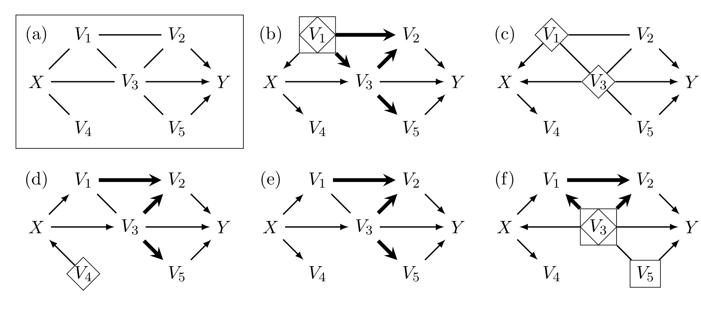
Figure 4(a)의 CPDAG \(\mathcal{G}\)에서 \(X\)의 \(Y\)에 대한 인과효과에 관심이 있다고 합시다. \(\mathcal{G}\)는 \((X,Y)\)에 대해 명백히 비순응적이므로 optimal IDA를 적용하는 것이 합당합니다.
단계별로 따라가 보겠습니다.
- 방향 조합의 열거: \(\mathrm{sib}(X,\mathcal{G})\)가 3개 노드를 담고 있으므로, 끝점이 \(X\)인 무향 엣지의 잠재적 방향 조합은 \(2^3 = 8\)가지입니다.
- 양립성 검사: 이 8가지 중 3가지는 새로운 v-구조를 함의하므로 \(\mathcal{G}\)와 양립하지 않습니다. 나머지 5가지가 Figure 4(b–f)의 maxPDAG로 확장됩니다. 이 검사와 Meek 규칙 적용이 optimal IDA의 7행에서 수행됩니다.
- Meek 규칙의 작동 예: 패널 (b)에서 \(V_1 \to X \to V_3\)로부터 Meek의 Rule 2에 의해 \(V_1 \to V_3\)가 따라옵니다. 그러면 Rule 1에 의해 \(V_3 \to V_5\)가 따라옵니다. (부록 A의 Figure 8 참조)
- 가능 후손 검사: 각 maxPDAG \(\mathcal{G}'\)에 대해 \(Y \in \mathrm{possde}(X,\mathcal{G}')\)인지 확인합니다. 여기서는 4(c)를 제외한 모든 maxPDAG에서 성립합니다. 나머지 넷에 대해 \(\mathbf{O} = \mathrm{O}(X,Y,\mathcal{G}')\)을 결정하고 \(\hat{\beta}_{yx.o}\)를 계산하며, (c)에 대해서는 0을 반환합니다.
두 알고리즘의 조정집합을 패널별로 비교하면 optimal IDA의 이득이 정확히 어디서 오는지 보입니다.
| 패널 | \(\mathrm{pa}(X,\mathcal{G}')\) (local IDA) | \(\mathrm{O}(X,Y,\mathcal{G}')\) (optimal IDA) | 해설 |
|---|---|---|---|
| (b) | \(\{V_1\}\) | \(\{V_1\}\) | 두 집합이 일치 |
| (c) | \(\{V_1, V_3\}\) | — (0 반환) | local IDA는 \(\hat{\beta}_{yx.p}\)를 반환하며 이는 \(\beta_{yx.p} = 0\)으로 수렴. optimal IDA는 곧바로 0을 반환 |
| (d) | \(\{V_4\}\) | \(\emptyset\) | optimal IDA의 이점: 불필요한 \(V_4\) 조정이 효율을 떨어뜨림이 보장됨 |
| (e) | — | — | 두 집합이 일치 |
| (f) | \(\{V_3\}\) | \(\{V_3, V_5\}\) | optimal IDA의 이점: \(V_5\)를 더 넣어 효율이 개선됨 |
패널 (d)와 (f)가 핵심입니다. (d)는 “처치 쪽 변수를 빼서” 이득을 보는 경우, (f)는 “결과 쪽 변수를 더해서” 이득을 보는 경우로, §1.2의 callout에서 정리한 두 방향의 직관이 각각 한 번씩 나타납니다.
소규모 모의실험
Figure 4(b)와 양립하는 인과 선형 모형에 따라 데이터를 생성하는 간단한 모의실험을 수행했습니다.
- 설정: 1,000개의 데이터셋, 각각 40개 관측치를 생성하여 Figure 4(a)의 CPDAG와 함께 local IDA와 optimal IDA에 입력했습니다.
- 참 가능 인과효과: \(0\), \(1.5\), \(2.5\)
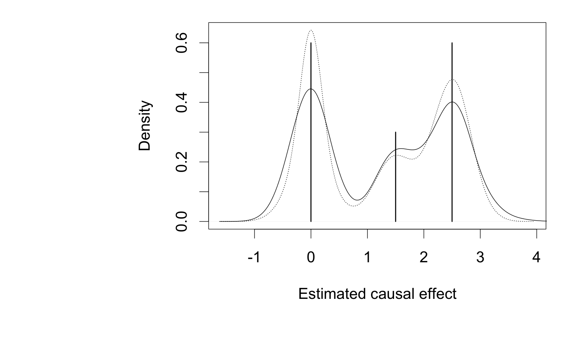
- optimal IDA의 밀도 플롯이 값 \(0\)과 \(2.5\) 주변에서 분명히 더 좁습니다.
- 저자들은 노드가 더 많고 경로가 더 긴 그래프에서는 두 알고리즘의 차이가 더욱 두드러진다고 보고합니다(그림은 생략).
- Figure 5를 재현하는 R 코드(R Core Team, 2019)는 온라인 부록에 있습니다.
4.5 모의실험 (§4.3 Simulation)
유한 표본 설정에서 optimal IDA와 local IDA의 성능을 비교하기 위해 더 광범위한 모의실험을 수행했습니다.
설계
설계 원칙: IDA가 실제로 쓰이는 전형적 상황을 반영합니다. 즉 \((X,Y)\)에 대해 비순응적인 (알려진 혹은 추정된) CPDAG \(\mathcal{G}\)에서 \(X\)의 \(Y\)에 대한 인과효과에 관심이 있는 상황입니다.
- 비순응성은 가능 인과효과의 다중집합 \((\tau_{xy}(\mathcal{D}))_{\mathcal{D} \in [\mathcal{G}]}\)가 (인과 선형 모형의 거의 모든 모수값에 대해) 둘 이상의 서로 다른 값을 담음을 함의합니다(Perković, 2020, Proposition 4.2).
- 평가 대상 통계량: 다중집합의 최소 절댓값 \(\min(|(\tau_{xy}(\mathcal{D}))_{\mathcal{D} \in [\mathcal{G}]}|)\)입니다. 이 값이 0이 아니면 \(X\)가 \(Y\)에 어떤 효과를 갖는다는 것을 알 수 있기 때문에 유용한 요약입니다.
- 평가 기준: 이 최소 절댓값이 두 알고리즘에 의해 얼마나 잘 추정되는지를 몬테카를로 평균제곱오차(MSE)로 비교합니다.
24개 시나리오는 다음 모수들의 모든 조합입니다.
| 모수 | 값 |
|---|---|
| 노드 수 \(p\) | \(\{10, 20, 50, 100\}\) |
| 노드당 기대 이웃 수 \(d\) | \(\{2, 3, 4\}\) |
| 표본 크기 \(n\) | \(\{100,\ 1{,}000\}\) |
각 시나리오에서 다음을 1,000회 반복했습니다.
- \(p\)개 노드와 노드당 기대 이웃 수 \(d\)를 갖는 DAG \(\mathcal{D}\)(그 CPDAG를 \(\mathcal{G}\)라 함)를, \(\mathcal{G}\)가 무작위로 고른 두 노드 \((X,Y)\)에 대해 비순응적이고 \(\min(|(\tau_{xy}(\mathcal{D}))_{\mathcal{D} \in [\mathcal{G}]}|)\)가 0이 아니도록 무작위 선택합니다.
- 다음을 100회 반복합니다.
- \(\mathcal{D}\) 위의 선형 인과 모형에서 \(n\)개 관측치를 갖는 데이터셋을 생성합니다. 0이 아닌 계수는 \([-1, -0.1] \cup [0.1, 1]\) 위의 균등분포에서 무작위로 뽑습니다.
- 탐욕적 동치 탐색(greedy equivalence search, GES)(Chickering, 2002)을 데이터에 적용해 추정 CPDAG \(\mathcal{G}^*\)를 얻습니다.
- optimal IDA와 local IDA를 참 CPDAG \(\mathcal{G}\)와 추정 CPDAG \(\mathcal{G}^*\) 양쪽에 적용합니다.
- 네 개의 출력 다중집합을 각각의 최소 절댓값으로 요약하고, 참값과의 제곱차를 100회에 걸쳐 평균해 몬테카를로 MSE를 구합니다.
상대 MSE(RMSE)를 다음으로 정의합니다.
\[ \mathrm{RMSE} = \frac{\mathrm{MSE}(\text{optimal IDA})}{\mathrm{MSE}(\text{local IDA})} \]
참 CPDAG \(\mathcal{G}\)에 대한 것을 \(r\), 추정 CPDAG \(\mathcal{G}^*\)에 대한 것을 \(r^*\)로 표기합니다. RMSE가 1보다 작으면 optimal IDA가 더 정밀하다는 뜻입니다. Remark 13을 고려하여 추정 표준오차는 다루지 않았습니다.
논문은 다음 단서를 답니다. 유일한 ‘참’ 인과효과를 갖는 DAG를 생성한 것은 편의상의 선택일 뿐이며, 개념적으로는 CPDAG의 공간에서 직접 뽑은 것으로 보아야 합니다. 그래서 가능한 효과들의 다중집합 전체를 ’진실’로 간주하는 것입니다.
추가로 희소 그래프 시나리오도 조사했습니다. 유전자 발현 데이터 같은 고차원 상황을 염두에 둔 것입니다.
- 그래프가 희소(\(d = 1\))하고 표본 크기가 중간(\(n = 100\))인 설정
- 노드 수 \(p\)가 10부터 1,000까지 8개 설정
- GES가 큰 그래프에서 느리므로 반복 수를 1,000회 → 100회, 그래프당 데이터셋 수를 100개 → 10개로 줄였습니다.
결과
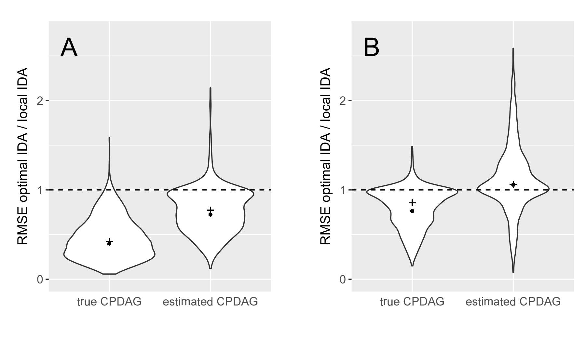
Table 1. 참 CPDAG \(\mathcal{G}\)에 적용했을 때의 RMSE \(r\) — 1,000회 반복에 대한 기하평균 (괄호 안은 중앙값)
| \(n=100\), \(d=2\) | \(n=100\), \(d=3\) | \(n=100\), \(d=4\) | \(n=1{,}000\), \(d=2\) | \(n=1{,}000\), \(d=3\) | \(n=1{,}000\), \(d=4\) | |
|---|---|---|---|---|---|---|
| \(p=10\) | 0.70 (0.76) | 0.72 (0.79) | 0.76 (0.86) | 0.69 (0.78) | 0.71 (0.78) | 0.75 (0.86) |
| \(p=20\) | 0.64 (0.69) | 0.63 (0.68) | 0.61 (0.66) | 0.63 (0.68) | 0.60 (0.65) | 0.59 (0.65) |
| \(p=50\) | 0.60 (0.64) | 0.54 (0.57) | 0.51 (0.55) | 0.55 (0.58) | 0.50 (0.54) | 0.46 (0.49) |
| \(p=100\) | 0.57 (0.61) | 0.50 (0.52) | 0.44 (0.46) | 0.54 (0.58) | 0.44 (0.46) | 0.40 (0.42) |
Table 2. 추정 CPDAG \(\mathcal{G}^*\)에 적용했을 때의 RMSE \(r^*\) — 1,000회 반복에 대한 기하평균 (괄호 안은 중앙값)
| \(n=100\), \(d=2\) | \(n=100\), \(d=3\) | \(n=100\), \(d=4\) | \(n=1{,}000\), \(d=2\) | \(n=1{,}000\), \(d=3\) | \(n=1{,}000\), \(d=4\) | |
|---|---|---|---|---|---|---|
| \(p=10\) | 1.06 (1.01) | 1.06 (1.04) | 1.06 (1.06) | 0.95 (0.99) | 0.97 (1.00) | 1.01 (1.00) |
| \(p=20\) | 0.99 (1.00) | 0.99 (1.00) | 0.96 (1.00) | 0.88 (0.96) | 0.89 (0.97) | 0.94 (0.99) |
| \(p=50\) | 0.94 (0.98) | 0.89 (0.93) | 0.89 (0.93) | 0.81 (0.90) | 0.79 (0.85) | 0.78 (0.86) |
| \(p=100\) | 0.97 (1.00) | 0.94 (0.97) | 0.90 (0.94) | 0.81 (0.91) | 0.73 (0.80) | 0.72 (0.77) |
Table 1과 2에서 읽히는 것을 정리하면 다음과 같습니다.
- 참 CPDAG에서는 optimal IDA가 모든 시나리오에서 명백히 우세합니다. 기하평균과 중앙값 모두 1 미만이며, \(p\)와 \(d\)가 커질수록 이득이 커집니다(\(p=100\), \(d=4\)에서 \(r \approx 0.40\)).
- 추정 CPDAG에서는 대다수 시나리오에서 여전히 우세하지만, \(r^*\)가 모든 시나리오에서 \(r\)보다 눈에 띄게 큽니다. 즉 그래프를 추정해야 할 때 optimal IDA의 상대적 성능이 나빠집니다.
- 저자들의 해석: 추정 그래프에는 엣지의 존재와 방향에 대한 오차가 불가피하게 포함되는데, 이 결과는 O-집합을 이용한 추정이 \(X\)의 부모집합을 이용한 추정보다 그런 오차에 더 취약함을 시사합니다.
- 작은 \(n\), 작은 \(p\)에서는 이점이 크지 않습니다. 노드가 몇 개 안 되는 그래프에서는 O-집합과 \(X\)의 부모집합이 종종 비슷하거나 아예 일치하므로 효율 이득이 덜 두드러집니다. 표본 크기가 작으면 추정 그래프의 오차가 늘어나는데, 위 추측대로 이것이 O-집합 추정에 더 큰 타격을 줍니다.
- 다만 \(p\)가 클 때는 \(d\)가 클수록 optimal IDA가 약간 유리해 보입니다.
희소 그래프 결과
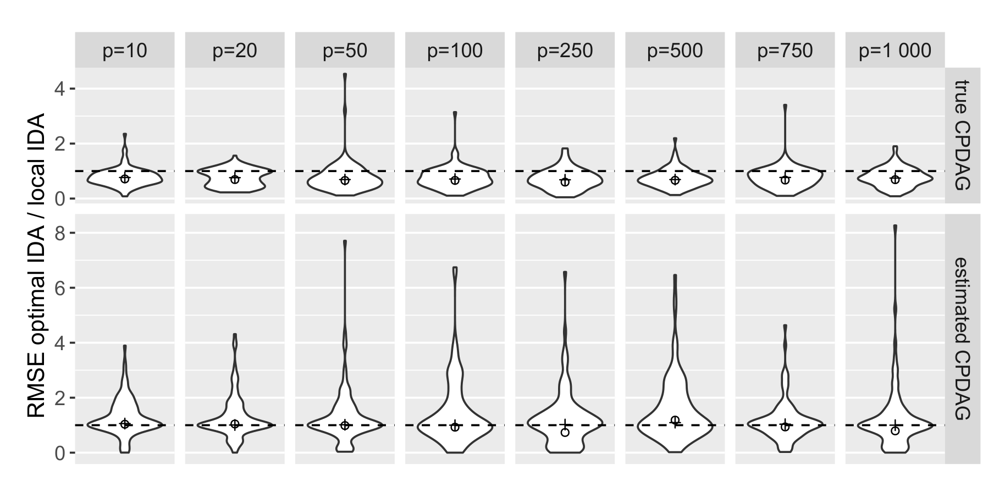
Table 3. 희소 그래프(\(d=1\), \(n=100\)) 시나리오의 RMSE — 100회 반복에 대한 기하평균 (괄호 안은 중앙값)
| \(p=10\) | \(p=20\) | \(p=50\) | \(p=100\) | |
|---|---|---|---|---|
| 참 CPDAG | 0.71 (0.77) | 0.69 (0.76) | 0.66 (0.69) | 0.66 (0.71) |
| 추정 CPDAG | 1.04 (1.06) | 1.04 (1.01) | 0.99 (1.02) | 0.93 (1.00) |
| \(p=250\) | \(p=500\) | \(p=750\) | \(p=1{,}000\) | |
|---|---|---|---|---|
| 참 CPDAG | 0.60 (0.68) | 0.67 (0.69) | 0.67 (0.77) | 0.69 (0.75) |
| 추정 CPDAG | 0.73 (1.02) | 1.16 (1.09) | 0.94 (1.04) | 0.79 (1.00) |
- CPDAG가 알려져 있으면 optimal IDA가 노드 수 \(p\)와 무관하게 local IDA를 능가합니다.
- CPDAG를 모르면 중앙값 RMSE가 모든 \(p\)에 대해 약 1입니다. 기하평균은 뚜렷한 패턴 없이 1 근처를 오르내리는데, 이는 반복 수가 적기(100회) 때문일 수 있습니다.
- 결론: 고차원 설정에서 주된 어려움은 그래프를 학습하는 것 자체이며, 이것이 optimal IDA가 local IDA에 대해 갖는 이점을 제한합니다.
추정된 그래프에 대한 신뢰도가 높을 때 optimal IDA를 쓸 것을 권장합니다. local IDA에 대한 이점은 노드 수가 최소 20개, 더 좋게는 50개 이상일 때 가장 두드러집니다.
5. O-집합과 비그래프적 변수 선택 (The O-Set and Non-Graphical Variable Selection)
이제 인과 DAG도, CPDAG도, maxPDAG도 알려져 있지 않은 상황을 가정합니다. 따라서 유효 조정집합을 비그래프적(non-graphical) 방식으로 고르고자 합니다. 논의는 단변량 처치 \(X\)와 단변량 결과 \(Y\)로 한정합니다.
5.1 배경: 예측을 위한 변수선택 vs. 조정을 위한 변수선택
- 다중회귀 분석에서는 결과 \(Y\)에 대한 관련 예측변수 집합을 찾기 위해 후진 선택(backward selection) 같은 변수선택 절차를 적용하는 것이 일반적입니다.
- 고차원 설정에서는 선택과 추정을 결합하는 정칙화 방법 — Lasso나 Elastic Net — 이 흔히 쓰입니다(Tibshirani, 1996; Zou & Hastie, 2005).
- 그러나: 예측을 위한 변수선택은 인과효과 추정을 위한 효율적·최적 조정집합을 찾는 것과 일반적으로 다른 과제입니다. 이 절은 어떤 가정과 수정 아래에서 두 과제가 일치하는지를 논합니다. 변수선택과 교란자 선택의 관계에 대한 일반적 개관은 Witte & Didelez (2019)에 있습니다.
선택된 조정집합이 유효하기 위한 기본 전제는, 변수를 골라내는 출발 집합 \(\mathbf{Z}\) 자체가 유효 조정집합이어야 한다는 것입니다(§2의 정의).
이 전제가 깔린 뒤에야 여러 선택 절차를 이용해 \(\mathbf{Z}\)의 부분집합으로서 다양한 유형의 유효 조정집합 — 예컨대 최소 유효 조정집합 — 을 결정할 수 있습니다(Witte & Didelez, 2019; de Luna et al., 2011).
5.2 Algorithm 3: 후진 회귀 선택
먼저 Algorithm 3은 후진 회귀 선택(Kleinbaum & Kupper, 1978; Montgomery et al., 2012)의 템플릿에 위 기본 가정을 서두에 추가한 것입니다.
Algorithm 3: Backward regression selection
────────────────────────────────────────────────────────────────────────────────
입력 : 변수 X, Y, Z 에 대한 i.i.d. 관측치.
단, Z 는 (X, Y)에 대한 유효 조정집합이어야 함 ← §5.1의 기본 가정
1: Z' ← Z
2: Pmax ← 1
3: while Pmax > α do
4: Plist ← 길이 |Z'| 의 빈 리스트
5: for all i in 1 to |Z'| do
6: Plist[i] ← Pval( Y ⊥⊥ Z_i | (X, Z'_{-i}) ) # 조건부 독립 검정의 p-값
7: end for
8: Pmax ← max(Plist)
9: if Pmax > α then
10: Z' ← Z'_{-argmax(Plist)} # 가장 "쓸모없는" 변수를 제거
11: end if
12: end while
13: return Z'
────────────────────────────────────────────────────────────────────────────────검정의 구체적 형태를 짚어 보겠습니다.
- 가우시안 오차의 선형 모형 가정 아래에서 \(Y \perp\!\!\!\perp Z_i \mid (\mathbf{Z}'_{-i}, X)\)는 회귀변수 집합이 \(\mathbf{Z}'_{-i} \cup \{X\}\)인 모형과 \(\mathbf{Z}' \cup \{X\}\)인 모형을 비교하여, 귀무가설 \(\beta_{y z_i . x z'_{-i}} = 0\)에 대한 \(t\)-검정으로 검정할 수 있습니다.
- 6행의
Pval은 인자로 명시된 귀무가설에 대한 검정의 p-값을 출력하는 함수입니다. 최대 p-값을 9행에서 임계값 \(\alpha\)와 비교합니다. - 주어진 \(\alpha\)에 대해 Algorithm 3은 고전적인 ‘p-값 방법’(Greenland & Pearce, 2015)을 구현합니다.
\(F_{\chi^2_1}(\cdot)\)을 자유도 1의 카이제곱 분포함수라 하겠습니다. 주어진 표본 크기 \(n\)에 대해,
\[ \alpha = 1 - F_{\chi^2_1}(2) \quad \Longleftrightarrow \quad \textbf{AIC} \text{를 이용한 후진 선택} \]
\[ \alpha = 1 - F_{\chi^2_1}(\log(n)) \quad \Longleftrightarrow \quad \textbf{BIC} \text{를 이용한 후진 선택} \]
가 각각 동치입니다(Murtaugh, 2014; Derryberry et al., 2018). 다만 AIC·BIC를 쓰는 동기 자체는 독립성 검정이 아닌 다른 틀에서 나온 것임에 유의해야 합니다(Akaike, 1974; Schwarz, 1978).
Algorithm 3은 \(t\)-검정의 p-값이 아닌 다른 조건부 독립성 측도로도 쉽게 각색할 수 있습니다. 예컨대 Li et al. (2005)이 두 개의 비모수 구현을 제안했습니다.
5.3 Algorithm 4: 오라클 후진 회귀 선택
참 독립성 관계가 알려져 있다면 Algorithm 3은 오라클 버전인 Algorithm 4로 압축됩니다.
Algorithm 4: Oracle backward regression selection
────────────────────────────────────────────────────────────────────────────────
입력 : 변수 X, Y, Z 사이의 독립성 관계.
단, Z 는 (X, Y)에 대한 유효 조정집합이어야 함
1: Z' ← Z
2: for all i in 1 to |Z'| do
3: if Y ⊥⊥ Z_i | (X, Z'_{-i}) then
4: Z' ← Z'_{-i}
5: end if
6: end for
7: return Z'
────────────────────────────────────────────────────────────────────────────────- p-값 비교가 불필요해지고, 각 \(Z_i\)를 단 한 번씩만 방문하면 됩니다.
- 순서가 무관한 이유: 모든 변수의 결합확률이 엄격히 양(strictly positive)이라면, 조건부 독립성의 일반적 성질로부터 순서 \(Z_1, Z_2, \dots, Z_p\)가 결과에 영향을 주지 않음이 따라옵니다.
- 본질적으로 Algorithm 4는 \(Y\)의 ’직접 예측변수(direct predictors)’만 남을 때까지 변수를 제거합니다. 즉 \(Y\)를 \(X\)와 \(\mathbf{Z}\) 위로 오라클 회귀했을 때 계수가 0이 아닌 변수들만 남깁니다.
- Algorithm 4는 HPM19가 도입한 가지치기(pruning) 알고리즘의 비그래프적 버전입니다. HPM19의 알고리즘은 d-분리 관계를 이용해 유효 조정집합을 점근분산이 더 작아지는 부분집합으로 가지칩니다.
5.4 명제 14: 후진 선택의 표적은 O-집합이다
이제 밑바탕 그래프가 존재한다고 가정합시다. 다음 명제가 O-집합을 후진 변수선택 알고리즘의 표적 집합으로 볼 수 있는 방식을 형식화하며, HPM19의 Proposition 3.6과 RS20의 Theorem 1로부터 따라옵니다.
\(X\)와 \(Y\)를 노드 집합 \(\mathbf{V}\)를 갖는 인과 DAG · CPDAG · maxPDAG \(\mathcal{G}\)의 노드라 하고, \(\mathbf{V}\)가 \(\mathcal{G}\)에 충실한(faithful) 결합밀도를 갖는 인과 모형을 따른다고 하자. \(\mathbf{Z}\)를 \(\mathcal{G}\)에서 \((X,Y)\)에 대한 유효 조정집합, \(\mathbf{Z}'\)을 \(\mathbf{Z}\)에 Algorithm 4를 적용한 출력이라 하자.
- (a) \(\mathbf{Z}'\)은 유효 조정집합이며, Algorithm 4에서 \(\mathbf{Z}\)의 변수들이 고려되는 순서에 의존하지 않는다.
- (b) 만약 \(\mathrm{O}(X,Y,\mathcal{G}) \subseteq \mathbf{Z}\)이면, \(\mathbf{Z}' = \mathrm{O}(X,Y,\mathcal{G})\)이다.
- (c) \(\mathbf{V}\)가 인과 선형 모형을 따르면 \(\mathrm{a.var}(\hat{\beta}_{yx.z'}) \le \mathrm{a.var}(\hat{\beta}_{yx.z})\)이다.
- (d) 모든 값 쌍 \(x, x' \in \mathcal{X}\)에 대해 \(\mathrm{a.var}(\hat{\Delta}_{yxx'.z'}) \le \mathrm{a.var}(\hat{\Delta}_{yxx'.z})\)이다.
(b)가 이 절의 핵심 주장입니다. 출발 집합 \(\mathbf{Z}\)가 (i) 유효 조정집합이고 (ii) O-집합을 포함하기만 하면, 오라클 후진 선택은 정확히 O-집합에 도달합니다. 즉 후진 선택이 겨냥하고 있던 표적은 사실 O-집합이었던 셈입니다.
5.5 Lasso로의 확장과 근본적 한계
Lasso 추정도 변수선택으로 볼 수 있습니다. 본래 동기와 통상적 용법은 대부분 예측에 관한 것이지만 말입니다.
- 특정 가정 아래에서 Lasso는 \(Y\)의 ‘직접 예측변수’ 전부를, 그리고 오직 그것만을 확률 1로 점근적으로 선택합니다(Zhao & Yu, 2006; Lounici, 2008).
- 따라서 Lasso가 후진 선택과 다른 원리를 쓰기는 하지만, 명제 14로부터 출발 집합 \(\mathbf{Z}\)가 유효 조정집합이면서 O-집합의 상위집합일 때 O-집합을 Lasso의 표적 집합으로도 볼 수 있음이 따라옵니다.
저자들이 거듭 강조하는 지점입니다.
- “\(\mathbf{Z}\)가 유효하다”는 가정도, “\(\mathrm{O}(X,Y,\mathcal{G}) \subseteq \mathbf{Z}\)”라는 가정도 경험적으로 검증할 수 없습니다.
- 따라서 어떤 변수선택 알고리즘을 적용하기 전에 사전 인과 지식이 필수적입니다(Witte & Didelez, 2019).
다만 IDA 계열에 대한 이점도 있습니다. (준)국소 IDA나 optimal IDA와 달리, Algorithm 4에 기반한 조정집합 선택은 “\(\mathbf{Z}\)가 유효 조정집합”이라는 가정이 계속 성립하는 한 일부 잠재 구조를 허용합니다. 변수의 일부만 측정된 상황에서는 이것이 장점이 될 수 있습니다.
유한 표본에서의 문제도 정직하게 언급됩니다.
- Algorithm 4에 대한 명제 14의 보장은 유한 표본 버전인 Algorithm 3으로 이어지지 않습니다.
- 유한 표본에서의 회귀 선택은 여러 약점이 알려져 있습니다(Harrell, 2010). 출력이 국소 최적해(local optimum)에 그칠 수 있고, 유효한 사후 선택 추론이 어렵습니다(Leeb & Pötscher, 2008).
- 다만 사후 선택 추론에 관한 문헌이 OLS 기반 접근(Berk et al., 2013; Rinaldo et al., 2019)과 Lasso 기반 접근(Lockhart et al., 2014; Lee et al., 2016) 양쪽에서 성장하고 있으며, 비그래프적 맥락의 인과효과 추정에 대해서는 Belloni et al. (2014), Dukes & Vansteelandt (2020a, 2020b), Chernozhukov et al. (2018) 등이 다루었습니다.
6. 결론 (Conclusions)
6.1 세 가지 기여의 요약
- ① O-집합의 재특성화: O-집합이 금지 노드 위에서의 잠재 사영에서 \(\mathbf{Y}\)의 부모집합과 같음을 보였습니다(명제 10). 이는 “\(Y\)의 모든 직접 원인을 조정하면 잔차분산이 최소화되고 따라서 \(\mathbf{X}\)의 \(\mathbf{Y}\)에 대한 인과효과 추정 정밀도가 개선된다”는 직관에 형식적 근거를 부여합니다.
- ② 금지 사영 자체의 유용성: 조정을 통한 인과효과 추정이 목표일 때 금지 사영은 그 자체로 유용한 도구입니다. 관심 있는 모든 변수를 보여 주면서, 조정해서는 안 되는 금지 변수들은 주변화해 없앱니다. 즉 인과 그래프의 복잡도를 줄이면서 조정집합 선택에 관련된 모든 정보를 보존합니다(명제 7, 8).
- ③ optimal IDA: 가능한 O-집합들로 조정하여 가능 인과효과 추정치의 다중집합을 출력하는 IDA의 새 변형을 제안했습니다. 인과 구조를 사전에 모르고 추정해야 하는 경우에도 추정 정밀도가 개선됨을 보였으며, 나아가 최적 조정의 적용 범위를 비순응 CPDAG·maxPDAG로 확장합니다.
pcalg에 구현되어 있습니다. 인과 탐색 방법 일반에 잘 알려진 단점들이 있지만, IDA는 대규모 데이터의 스크리닝(screening) 도구로 가치를 입증해 왔으며(Le et al., 2013; Engelmann et al., 2015; Luo et al., 2018) ‘optimal’ 버전이 그 성능을 더 개선할 수 있습니다. - ④ 비그래프적 변수선택과의 연결: 후진 변수선택 알고리즘을 O-집합 선택을 겨냥하는 것으로 볼 수 있는 전제와 가정을 상세히 밝혔습니다. 본질적으로 선택 대상 변수 집합이 금지 사영의 모든 노드, 또는 그 적절한 부분집합으로 구성된다고 가정해야 합니다. 그러면 알고리즘은 탐지된 조건부 독립성에 근거해 \(Y\)의 부모 / 직접 원인을 결정합니다.
입력이 금지 노드를 포함하거나 특정 교란자를 빠뜨리면, 알고리즘은 유효하지 않은 조정집합을 선택할 수 있습니다.
후자를 피하려면 금지 노드에 해당하는 변수 집합에 대한 충분한 사전 지식이 자동 변수선택을 인과추론에 쓸 때의 핵심 전제입니다. 이 전제가 밑바탕 인과 DAG에 대한 완전한 지식을 요구하지는 않지만, 그런 사전 지식이 순수하게 데이터 주도적으로는 확립될 수 없다는 점은 반드시 인식해야 합니다(Witte & Didelez, 2019).
6.2 최소성 vs. 최적성
변수선택에 관한 많은 연구가 작거나 최소인 조정집합을 찾는 데 집중해 왔습니다(de Luna et al., 2011; Textor & Liśkiewicz, 2011; Knüppel & Stang, 2010).
- 작은 조정집합의 장점: 연구 설계 단계에서 데이터 수집이 비싸고 비용을 최소화해야 할 때 유용합니다. 또한 매칭 추정량 등에 대해 바람직한 통계적 성질을 갖습니다 — 적은 변수로 매칭할 때 적절한 짝을 찾기가 더 쉽기 때문입니다.
- O-집합의 위치: 일반적으로 O-집합은 최소가 아닙니다. 대신 선형 인과 모형과 비모수 설정에서 회귀 조정을 통한 인과효과 추정의 최적성을 담보합니다.
- 모의실험 결과는 O-집합의 최적성이 다른 모수적 설정과 추정 방법으로도 확장됨을 시사합니다. 예컨대 표준화 로지스틱 회귀를 통한 주변 오즈비(marginal odds ratio) 추정이 그렇습니다(Witte & Didelez, 2019).
- 둘의 결합: RS20은 최적 최소 집합(optimal minimal set) — 모든 최소 조정집합 중 정칙 점근선형 추정량 부류에서 가장 정밀한 추정을 주는 집합 — 이 반드시 O-집합의 부분집합임을 보였습니다. O-집합의 관련성과 중요성을 뒷받침하는 결과입니다.
6.3 조정은 여러 식별 전략 중 하나일 뿐입니다
조정은 인과효과를 식별하는 여러 방법 중 하나일 뿐입니다. O-집합으로 조정하는 것이 다른 어떤 유효 조정집합으로 조정하는 것보다 점근적으로 효율적인 것은 맞지만, 앞문 전략(front-door strategy)(Pearl, 2009) 같은 대안적 식별 전략을 쓰면 더 작은 점근분산을 얻을 수 있는 경우도 있습니다. 이는 RS20과 Guo & Perković (2020)에서 더 조사되었습니다.
6.4 향후 연구 방향
① 비모수 optimal IDA는 가능한가?
RS20의 결과를 고려하면 자연스러운 질문입니다. IDA에서 서로 다른 가능 유효 조정집합을 찾는 부분은 명백히 인과 선형 모형에 국한되지 않으며, 주어진 \(X, Y\), 조정집합에 대해 RS20 같은 추정량을 쓸 수도 있습니다. 그러나 선형성 아래에서의 단순화가 상당합니다.
- 그래프 탐색 측면: 가우시안 점수를 쓰는 GES는 일치성이 증명되어 있고(Chickering, 2002), 항상 CPDAG를 반환한다는 장점이 있습니다. 비모수 그래프 탐색 알고리즘도 존재하지만 계산 부담이 크거나 엣지 탐지력이 낮은 경우가 많습니다(Shah & Peters, 2020; Ramsey, 2014).
- 인과효과의 표현 측면: 인과 선형 모형에서 \(X\)의 \(Y\)에 대한 인과효과는 하나의 값이고, 서로 다른 유효 조정집합에 대한 주변 인과효과와 조건부 인과효과가 모두 동일합니다. 비모수 경우에는 인과효과가 특정되지 않은 함수이며, 비축약성(non-collapsibility) 문제도 개입할 수 있습니다.
- 이 개념적 장애물들을 해결하는 것이 미해결 문제로 남아 있습니다.
② 잠재변수가 있으면 어떻게 되는가?
이 논문은 전반에 걸쳐 모든 변수가 관측된다고 가정했습니다.
- HPM19는 숨은 변수가 있으면 점근적으로 최적인 집합이 존재하지 않을 수 있음을 보였습니다.
- Smucler et al. (2020)은 밑바탕 DAG에 숨은 변수가 포함될 때 최적 조정집합이 존재하기 위한 충분조건을 주었고, 최적 최소 조정집합은 항상 존재함을 보였습니다.
- 그러나 최적 조정집합 존재에 대한 필요충분조건은 아직 정식화되지 않았습니다.
부록 A. 용어 (Appendix A. Terminology)
논문 전반에 쓰이는 용어를 정리한 부록입니다. HPM19와 정합적이며 필요한 곳에서 확장한 것입니다.
A.1 그래프와 경로
- 그래프: \(\mathcal{G} = (\mathbf{V},\mathbf{E})\)는 노드 집합과 엣지 집합으로 구성됩니다. 엣지 유형은 유향(\(\to\)), 양방향(\(\leftrightarrow\)), 무향(\(-\)) 셋입니다. 주어진 노드 쌍 사이에 엣지가 둘 이상 있을 수 있습니다. 자기 자신으로의 엣지는 허용하지 않으며(loop-free), 노드 쌍 사이에 엣지가 최대 하나인 loop-free 그래프를 단순 그래프(simple graph)라 부릅니다.
- 유도 부분그래프: \(\mathcal{G}' = (\mathbf{V}',\mathbf{E}')\)가 \(\mathbf{V}' \subseteq \mathbf{V}\)이고 \(\mathbf{E}'\)이 \(\mathbf{V}'\)의 노드들 사이의 \(\mathbf{E}\)의 모든 엣지를 포함하면 \(\mathcal{G}'\)은 \(\mathbf{V}'\)에 대한 \(\mathcal{G}\)의 유도 부분그래프입니다.
- 경로: \((V_0, e_1, V_1, \dots, e_K, V_K)\), \(K \ge 1\)로서 모든 노드가 한 번씩만 나타나고 \(e_k\)의 끝점이 \(V_{k-1}\)과 \(V_k\)인 것입니다. 단순 그래프에서는 노드 나열만으로 경로를 특정할 수 있습니다.
- 유향 경로 · 가능 유향 경로: 모든 엣지가 유향이고 \(V_K\) 방향을 가리키면 유향입니다. 모든 엣지가 유향이거나 무향이며 \(V_i \leftarrow V_j\) (\(1 \le i < j \le K\))인 쌍이 없으면 가능 유향(possibly directed)입니다. (Perković et al. (2017)의 정의를 따르되, 여기서는 \(V_i\)와 \(V_j\)가 경로상 인접할 필요가 없다는 점에서 비표준적입니다.)
- 연접(concatenation): \(p = (V_0, \dots, V_K)\)와 \(q = (V_K, \dots, V_{K+L})\)에 대해 \(p \oplus q = (V_0, \dots, V_{K+L})\)이며, 모든 노드가 서로 다를 것을 요구합니다.
A.2 조상 관계
- \(A\)에서 \(B\)로 유향 경로가 있거나 \(A = B\)이면 \(A\)는 \(B\)의 조상, \(B\)는 \(A\)의 후손입니다.
- 가능 유향 경로가 있거나 \(A = B\)이면 가능 조상 / 가능 후손입니다.
- \(A \to B\)이면 \(A\)는 \(B\)의 부모, \(B\)는 \(A\)의 자식입니다. \(A - B\)이면 형제(siblings)입니다.
노드는 자기 자신의 (가능) 조상이자 (가능) 후손이지만, 자기 자신의 부모·자식·형제는 아닙니다. 즉 \(V \in \mathrm{de}(V,\mathcal{G})\)이지만 \(V \notin \mathrm{pa}(V,\mathcal{G})\)입니다. 금지 집합 \(\mathrm{de}(\mathrm{cn}) \cup \mathbf{X}\)에서 인과 노드 자신이 금지 노드가 되는 이유가 이 규약에 있습니다.
표기는 \(\mathrm{an}(V,\mathcal{G})\), \(\mathrm{possan}(V,\mathcal{G})\), \(\mathrm{de}(V,\mathcal{G})\), \(\mathrm{possde}(V,\mathcal{G})\), \(\mathrm{pa}(V,\mathcal{G})\), \(\mathrm{ch}(V,\mathcal{G})\), \(\mathrm{sib}(V,\mathcal{G})\)이며, 노드 집합 \(\mathbf{W}\)에 대해서는 \(\mathrm{an}(\mathbf{W},\mathcal{G}) = \bigcup_{W \in \mathbf{W}} \mathrm{an}(W,\mathcal{G})\)처럼 합집합으로 정의합니다.
A.3 충돌자 · 확정 상태 경로 · v-구조
- 충돌자(collider): 경로 \(p\) 위의 비-끝점 노드 \(V\)가 \(p\) 위에서 자신에 인접한 두 엣지 모두 \(V\) 쪽에 화살촉을 가지면 충돌자입니다: \(\to V \leftarrow\), \(\leftrightarrow V \leftarrow\), \(\to V \leftrightarrow\), \(\leftrightarrow V \leftrightarrow\).
- 비-충돌자(non-collider): 인접한 두 엣지 중 최소 하나가 \(V\)에서 나가면 비-충돌자입니다(\(\to V \to\), \(- V \to\), \(\leftrightarrow V \to\), \(\leftarrow V \to\), \(\leftarrow V \leftrightarrow\), \(\leftarrow V -\), \(\leftarrow V \leftarrow\)). 또는 인접한 두 엣지가 모두 무향이고 \(p\) 위에서 \(V\)에 인접한 두 노드가 서로 인접하지 않을 때도 비-충돌자입니다.
- 확정 상태 경로(definite-status path): 모든 비-끝점이 충돌자이거나 비-충돌자인 경로입니다. DAG와 ADMG에서는 모든 경로가 확정 상태입니다.
- v-구조: \(\{A, B, C\}\) 위의 유도 부분그래프가 \(A \to B \leftarrow C\)이면 세 노드가 v-구조를 이룹니다.
A.4 그래프 부류
| 부류 | 정의 |
|---|---|
| ADMG (acyclic directed mixed graph) | 유향·양방향 엣지만 갖고 유향 순환이 없는 그래프 |
| DAG | 유향 엣지만 갖고 유향 순환이 없는 단순 그래프 |
| PDAG | 유향·무향 엣지만 갖고 유향 순환이 없는 단순 그래프 |
| CPDAG | 마르코프 동치류를 표현하는 PDAG (엣지 패턴에 일정한 제약이 있음) |
| maxPDAG | Meek 규칙에 대해 닫혀 있는(closed) 엣지 방향을 갖는 PDAG |
DAG와 CPDAG는 maxPDAG의 특수 경우입니다.
- 마르코프 동치류: DAG \(\mathcal{D}\)의 동치류는 \(\mathcal{D}\)와 같은 d-분리 관계를 함의하는 DAG들의 집합이며, 이는 같은 인접 관계와 같은 v-구조를 갖는 DAG들과 일치합니다(Verma & Pearl, 1990).
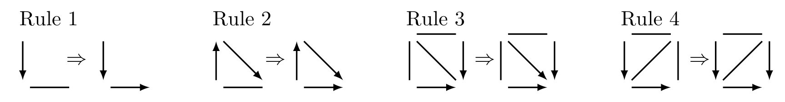
A.5 차단 · 분리 · 인과 모형
- 차단(blocking): ADMG 또는 PDAG \(\mathcal{G}\)의 확정 상태 경로 \(p\)가 노드 집합 \(\mathbf{C}\)에 의해 차단된다 함은 (i) \(p\)가 \(\mathbf{C}\)에 속하는 비-충돌자를 포함하거나, (ii) \(p\)가 \(\mathrm{an}(\mathbf{C},\mathcal{G})\)에 속하지 않는 충돌자를 포함하는 것입니다. 그렇지 않으면 \(p\)는 \(\mathbf{C}\)가 주어졌을 때 열려 있습니다.
- m-분리: \(\mathbf{A}\)의 원소와 \(\mathbf{B}\)의 원소 사이의 모든 경로가 \(\mathbf{C}\)에 의해 차단되면 \(\mathbf{A} \perp_{\mathcal{G}} \mathbf{B} \mid \mathbf{C}\)로 씁니다. DAG에서 m-분리는 d-분리입니다.
- 충실성(faithfulness): 결합밀도 \(f(\mathbf{v})\)가 DAG \(\mathcal{D}\)에 대해 마르코프라 함은 서로소인 \(\mathbf{X},\mathbf{Y},\mathbf{Z}\)에 대해 \(\mathbf{X} \perp_{\mathcal{D}} \mathbf{Y} \mid \mathbf{Z} \Rightarrow \mathbf{X} \perp\!\!\!\perp \mathbf{Y} \mid \mathbf{Z}\)인 것이며, 역방향도 성립하면 충실합니다.
- 인과 DAG와 절단 인수분해(truncated factorisation): 결합밀도 \(f(\mathbf{v})\)가 인과 DAG \(\mathcal{D} = (\mathbf{V},\mathbf{E})\)와 양립한다 함은 모든 \(\mathbf{X} \subseteq \mathbf{V}\)에 대해 개입 후 밀도가 다음처럼 쓰이는 것입니다(Spirtes et al., 2000; Pearl, 2009).
\[ f(\mathbf{v} \mid do(\mathbf{x}')) = \mathbb{1}(\mathbf{x} = \mathbf{x}') \prod_{V \in \mathbf{V} \setminus \mathbf{X}} f(v \mid \mathrm{pa}(V,\mathcal{D})) \]
- 인과 CPDAG · maxPDAG: \([\mathcal{G}]\)가 인과 DAG를 포함하면 \(\mathcal{G}\)를 인과 CPDAG·maxPDAG라 부릅니다. 인과 ADMG는 인과 DAG에 잠재 사영(정의 4)을 가한 결과입니다.
- 부분 위상 순서(partial topological ordering): \(\mathbf{V}_1 < \cdots < \mathbf{V}_p\)가 \(\mathbf{V}\)의 부분 위상 순서라 함은, 모든 \(i > j\)에 대해 \(\mathbf{V}_i\)에서 \(\mathbf{V}_j\)로 가는 유향 엣지가 없는 것입니다. (명제 7의 증명에서 결정적으로 쓰입니다.)
A.6 인과 선형 모형과 분산 표기
인과 선형 모형: 인과 DAG \(\mathcal{D}\)의 각 \(V_i \in \mathbf{V}\)의 분포가 다음 형태의 방정식으로 기술되면 \(\mathbf{V}\)는 \(\mathcal{D}\)와 양립하는 인과 선형 모형을 따릅니다.
\[ V_i = \sum_{V_j \in \mathrm{pa}(V_i,\mathcal{D})} \alpha_{ij} V_j + \epsilon_{v_i} \]
여기서 \(\alpha_{ij} \in \mathbb{R}\)이고, \(\epsilon_{v_i}\)는 평균 0, 유한분산을 가지며 \(\epsilon_{v_1},\dots,\epsilon_{v_p}\)가 결합 독립인 확률변수입니다. CPDAG·maxPDAG \(\mathcal{G}\)에 대해서는 \([\mathcal{G}]\)의 어떤 DAG와 양립하는 인과 선형 모형을 따르는 것으로 정의합니다.
편분산(partial variance) 표기: 확률변수 \(S\)와 확률벡터 \(\mathbf{T}\)에 대해 \(\mathbf{T}\)의 공분산행렬을 \(\Sigma_{tt}\), \(S\)와 \(\mathbf{T}\) 사이 공분산의 행벡터를 \(\Sigma_{st}\)라 하면, \(\mathbf{T}\)가 주어졌을 때 \(S\)의 편분산은 다음으로 정의됩니다.
\[ \sigma_{ss.t} = \mathrm{Var}(S) - \Sigma_{st}\,\Sigma_{tt}^{-1}\,\Sigma_{st}^{\top} \]
이것이 곧 \(S\)를 \(\mathbf{T}\) 위로 선형회귀한 뒤 남는 잔차분산입니다.
원문 출판본에는 이 식의 마지막 항이 \(\Sigma_{st}^{-1}\)로 인쇄되어 있으나, 차원이 맞으려면 \(\Sigma_{st}\)의 전치(즉 \(\Sigma_{ts}\))여야 합니다. 본 포스트에서는 차원이 맞는 형태로 적었습니다.
점근분산: \(\sqrt{n}(\hat{\beta}_n - \beta)\)가 \(N(0, v)\)로 분포수렴하는 추정량 열 \((\hat{\beta}_n)_{n \in \mathbb{N}}\)에 대해 \(v\)를 \(\hat{\beta}\)의 점근분산이라 하고 \(\mathrm{a.var}(\hat{\beta}) = v\)로 씁니다.
부록 B. 3절의 증명 (Appendix B. Proofs for Section 3)
금지 사영에 관한 §3의 주장들을 증명하는 부록입니다. 증명의 논리 골격과 핵심 아이디어를 중심으로 옮깁니다.
B.1 명제 6의 증명 (유효 조정집합의 존재)
보이려는 것: \(\mathcal{D}\)에서 \((\mathbf{X},\mathbf{Y})\)에 대한 유효 조정집합이 존재하지 않을 필요충분조건은 \(\mathcal{D}^{XY}\)에서 어떤 \(X \in \mathbf{X}\)와 \(Y \in \mathbf{Y}\) 사이에 양방향 엣지가 있는 것입니다.
(\(\Leftarrow\)) 양방향 엣지가 있으면 유효 조정집합이 없다.
- \(\mathcal{D}^{XY}\)에 \(X \leftrightarrow Y\)가 있다고 합시다. 잠재 사영의 정의 4(조항 2)에 의해, \(\mathcal{D}\)에는 \(X\)와 \(Y\) 사이에 모든 비-끝점 노드가 비-충돌자이면서 금지 집합에 속하는 경로가 존재합니다.
- 이는 비인과 경로이면서, 금지 노드가 아닌 어떤 집합으로도 차단할 수 없는 경로입니다. 차단하려면 그 경로 위의 비-충돌자로 조건화해야 하는데 그것들이 모두 금지 노드이기 때문입니다.
- 따라서 유효 조정집합이 존재하지 않습니다.
(\(\Rightarrow\)) 유효 조정집합이 없으면 양방향 엣지가 있다.
- 유효 조정집합이 없다고 하면, Lemma 15(아래)에 의해 \(\mathbf{X} \cap \mathrm{de}(\mathrm{cn}(\mathbf{X},\mathbf{Y},\mathcal{D}),\mathcal{D}) \ne \emptyset\)입니다.
- \(X^* \in \mathbf{X} \cap \mathrm{de}(\mathrm{cn}(\mathbf{X},\mathbf{Y},\mathcal{D}),\mathcal{D})\)를 택하면, 어떤 \(C^* \in \mathrm{cn}(\mathbf{X},\mathbf{Y},\mathcal{D})\)와 \(Y^* \in \mathbf{Y}\)가 존재하여 \(X^* \leftarrow \cdots \leftarrow C^* \to \cdots \to Y^*\) 형태의 경로가 있으며, 모든 비-끝점이 비-충돌자이고 금지 집합에 속합니다.
- 정의 4에 의해 이는 \(\mathcal{D}^{XY}\)에서 양방향 엣지 \(X^* \leftrightarrow Y^*\)에 대응합니다. \(\blacksquare\)
\(\mathbf{X}\)와 \(\mathbf{Y}\)를 인과 DAG \(\mathcal{D}\)에서 서로소인 노드 집합으로서 \(\mathbf{Y} \subseteq \mathrm{de}(\mathbf{X},\mathcal{D})\)라 하자. 그러면 \(\mathcal{D}\)에서 \((\mathbf{X},\mathbf{Y})\)에 대한 유효 조정집합이 존재할 필요충분조건은
\[ \mathbf{X} \cap \mathrm{de}(\mathrm{cn}(\mathbf{X},\mathbf{Y},\mathcal{D}),\mathcal{D}) = \emptyset \]
이다.
Lemma 15의 직관: “처치 노드 중 하나가 인과 노드의 후손이면 안 된다”는 조건입니다. 다변량 처치에서 \(X_1 \to \cdots \to X_2\)처럼 처치들끼리 인과 경로로 얽히면, \(X_1\)의 효과가 \(X_2\)를 거쳐 흐르는 부분과 그렇지 않은 부분이 뒤섞여 어떤 조정으로도 분리할 수 없게 됩니다. Figure 2의 패널 F가 정확히 이 경우입니다.
B.2 명제 7의 증명 (금지 사영이 인과 DAG가 되는 조건)
(\(\Rightarrow\)) \(\mathcal{D}^{XY}\)가 인과 DAG이면 양방향 엣지가 없으므로 명제 6에 의해 유효 조정집합이 존재합니다.
(\(\Leftarrow\)) 유효 조정집합이 존재한다고 하면, 다음 셋을 차례로 보입니다.
(1) 구문적으로 DAG이다 — 순환 없는 유향 그래프.
- 명제 6과 Lemma 16에 의해 \(\mathcal{D}^{XY}\)에는 양방향 엣지가 없습니다.
- 비순환성은 정의 4의 조항 1로부터 보장됩니다. \(\mathcal{D}(\mathbf{W})\)의 모든 유향 엣지는 \(\mathcal{D}\)의 유향 경로에 대응하므로, \(\mathcal{D}^{XY}\)에 유향 순환이 있으면 \(\mathcal{D}\)에도 있어야 하는데 이는 모순입니다.
(2) 의미적으로 동일하다 — \(\mathcal{D}^{XY}\)에서 d-분리를 적용한 결과가 \(\mathcal{D}\)에서 같은 노드 집합에 d-분리를 적용한 결과와 일치합니다. 잠재 사영의 m-분리가 원 DAG의 d-분리와 대응하며(Richardson et al., 2017), 여기서는 \(\mathcal{D}^{XY}\)가 구문적으로 DAG이므로 m-분리와 d-분리가 동치이기 때문입니다.
(3) 인과 DAG이다 — \(\mathcal{D}^{XY}\)가 함의하는 절단 인수분해가 \((\mathbf{V} \setminus \mathrm{forb}(\mathbf{X},Y,\mathcal{D})) \cup \mathbf{X} \cup \{Y\}\)의 결합 주변분포에 대해 성립함을 보입니다. 증명의 핵심 도구가 부분 위상 순서입니다. 다음 집합들을 정의하면
| 기호 | 정의 |
|---|---|
| \(\mathbf{A}\) | \((\mathbf{V} \setminus \mathrm{forb}(\mathbf{X},Y,\mathcal{D})) \cup \mathbf{X}\) — \(Y\)를 제외한 \(\mathcal{D}^{XY}\)의 노드 집합 |
| \(\mathbf{C}\) | \(\mathrm{cn}(\mathbf{X},Y,\mathcal{D}) \setminus (\mathbf{X} \cup \{Y\})\) — \(Y\)의 조상인 금지 노드들 |
| \(\mathbf{M}\) | \(\mathrm{forb}(\mathbf{X},Y,\mathcal{D}) \setminus (\mathbf{X} \cup \{Y\} \cup \mathbf{C})\) — 나머지 금지 노드들 |
다음 부분 위상 순서가 성립합니다.
\[ \mathbf{A} < \mathbf{C} < Y < \mathbf{M} \]
(\(Y\)가 \(\mathbf{X}\) 안에 후손을 가질 수 없다는 사실 — Lemma 15 — 이 여기서 쓰입니다.) 이 순서 덕분에 \(\mathbf{M}\) 위에서 주변화하면 마지막 곱 항이 그대로 사라지고, \(\mathbf{C}\) 위에서 주변화하면 \(\mathbf{A}\)의 변수들이 \(\mathbf{C}\)에 부모를 갖지 않는다는 사실로부터 나머지 항이 보존됩니다. 이어서 “변수는 자신의 부모가 주어지면 비후손들과 조건부 독립”이라는 성질을 써서 \(f(y \mid \mathrm{pa}(Y,\mathcal{D})) = f(y \mid \mathbf{a} \cup \mathbf{c})\)와 \(\prod_{C \in \mathbf{C}} f(c \mid \mathrm{pa}(C,\mathcal{D}) \cup \mathbf{a}) = f(\mathbf{c} \mid \mathbf{a})\)를 얻으면, 최종적으로
\[ f(\mathbf{a}, y \mid do(\mathbf{t}')) = \mathbb{1}(\mathbf{t} = \mathbf{t}') \prod_{V \in (\mathbf{A} \cup \{Y\}) \setminus \mathbf{T}} f(v \mid \mathrm{pa}(V, \mathcal{D}^{XY})) \]
즉 \(\mathcal{D}^{XY}\)가 함의하는 절단 인수분해 공식이 정확히 얻어집니다. \(\blacksquare\)
\(\mathcal{D}\)를 노드 집합 \(\mathbf{V}\)를 갖는 DAG, \(\mathbf{X} \subset \mathbf{V}\), \(Y \in \mathbf{V} \setminus \mathbf{X}\)로서 \((\mathbf{X}, Y)\)에 대한 유효 조정집합이 존재한다고 하자. 그러면 \(\mathcal{D}^{XY}\)에는 있지만 \(\mathcal{D}\)에는 없는 엣지는 모두 \(Y\)로 들어가는 유향 엣지이다.
Lemma 16의 증명 아이디어: \(\mathbf{F} = \mathrm{forb}(\mathbf{X},Y,\mathcal{D}) \setminus (\mathbf{X} \cup \{Y\})\)라 할 때, 사영으로 새 엣지가 생기려면 \(\mathbf{V} \setminus \mathbf{F}\)의 노드가 \(\mathbf{F}\) 안에 조상을 가져야 합니다. 그런데 (i) \(W \in \mathbf{V} \setminus \mathrm{forb}\)가 \(\mathbf{F}\)에 조상을 가지면 \(W\) 자신이 금지 노드가 되어 모순이고, (ii) \(X \in \mathbf{X}\)가 \(\mathbf{F}\)에 조상을 가지면 Lemma 15에 위배됩니다. 따라서 \(Y\)만이 그런 노드가 될 수 있습니다. \(\blacksquare\)
이 보조정리가 명제 10을 “\(Y\)의 부모집합”이라는 형태로 만들어 주는 기술적 열쇠입니다. 사영으로 새로 생기는 엣지가 전부 \(Y\)로 들어가므로, O-집합의 원소가 사영 후 정확히 \(Y\)의 부모가 됩니다.
B.3 명제 8의 증명 개요 (조정 유효성의 보존)
\(\mathbf{F} = \mathrm{forb}(\mathbf{X},\mathbf{Y},\mathcal{D}) \setminus (\mathbf{X} \cup \mathbf{Y})\)로 두고 양방향을 각각 보입니다.
(\(\Rightarrow\)) \(\mathcal{D}\)에서 유효하면 \(\mathcal{D}^{XY}\)에서도 유효하다.
- \(\mathbf{Z} \cap \mathrm{forb}(\mathbf{X},\mathbf{Y},\mathcal{D}) = \emptyset\)이고 \(\mathbf{Z} \cap \mathbf{Y} = \emptyset\)이므로 \(\mathbf{Z}\)의 모든 노드는 \(\mathcal{D}^{XY}\)의 노드이기도 합니다.
- 나아가 \(\mathrm{forb}(\mathbf{X},\mathbf{Y},\mathcal{D}^{XY}) \subseteq \mathbf{X} \cup \mathbf{Y}\)이므로 \(\mathbf{Z} \cap \mathrm{forb}(\mathbf{X},\mathbf{Y},\mathcal{D}^{XY}) = \emptyset\)입니다. 순응성은 양쪽에서 자명하게 성립합니다.
- 남은 것은 \(\mathcal{D}^{XY}\)에서 \(\mathbf{X}\)에서 \(\mathbf{Y}\)로 가는 모든 적정 비인과 경로가 \(\mathbf{Z}\)에 의해 차단됨을 보이는 것이며, 귀류법으로 진행합니다. 열린 경로 \(p\)가 있다고 가정하고, \(p\)의 마지막 노드가 \(\mathbf{Y} \setminus \mathbf{Y}_F\)에 있는 경우와 \(\mathbf{Y}_F\)에 있는 경우로 나눕니다(\(\mathbf{Y}_F = \mathbf{Y} \cap \mathrm{forb}(\mathbf{X},\mathbf{Y},\mathcal{D}^{XY})\)).
- 전자에서는 \(p\)가 \(\mathcal{D}\)에서도 경로이고, \(\mathrm{de}(V,\mathcal{D}) \subseteq \mathrm{de}(V,\mathcal{D}^{XY}) \cup \mathbf{F}\)이면서 \(\mathbf{Z} \cap \mathbf{F} = \emptyset\)이므로 \(\mathcal{D}\)에서도 열려 있습니다 → 모순.
- 후자에서는 \(p\)의 마지막 엣지 \(V_{K-1} \to V_K\)가 \(\mathcal{D}\)의 인과 경로 \(q''\)에 대응하며, \(q = p' \oplus q''\)가 \(\mathcal{D}\)에서 열린 적정 비인과 경로가 됩니다 → 모순.
(\(\Leftarrow\)) \(\mathbf{F}\)의 노드를 포함하지 않는 \(\mathbf{Z}\)가 \(\mathcal{D}\)에서 유효하지 않으면 \(\mathcal{D}^{XY}\)에서도 유효하지 않음을 보입니다. 논리는 위의 대칭으로, \(\mathcal{D}\)의 열린 적정 비인과 경로를 잘라 \(p'\)과 \(p''\)로 나누고, 사영이 \(p''\)을 하나의 엣지 \(q'' = V_L \to V_K\)로 보낸다는 사실을 이용해 \(\mathcal{D}^{XY}\)에서의 열린 경로 \(q = p' \oplus q''\)를 구성합니다. \(\blacksquare\)
B.4 명제 10의 증명 (O = O\(^*\))
두 포함 관계를 각각 보입니다.
(\(\subseteq\)) \(\mathrm{O}(\mathbf{X},\mathbf{Y},\mathcal{D}) \subseteq \mathrm{O}^*(\mathbf{X},\mathbf{Y},\mathcal{D})\).
- \(Z \in \mathrm{O}(\mathbf{X},\mathbf{Y},\mathcal{D})\)라 하면, 정의 1에 의해 \(\mathrm{O} \cap \mathrm{forb} = \emptyset\)이므로 \(Z\)는 \(\mathcal{D}^{XY}\)의 노드입니다.
- \(\mathrm{O} \subseteq \mathrm{pa}(\mathrm{cn}(\mathbf{X},\mathbf{Y},\mathcal{D}),\mathcal{D})\)이고 \(\mathrm{cn} \subseteq \mathrm{forb}\)이므로, 어떤 \(Y \in \mathbf{Y}\)에 대해 \(\mathcal{D}\)에 모든 비-끝점이 금지 노드인 유향 경로 \(Z \to \cdots \to Y\)가 존재합니다.
- 정의 4의 조항 1에 의해 이는 \(\mathcal{D}^{XY}\)의 엣지 \(Z \to Y\)에 대응하므로 \(Z \in \mathrm{O}^*\)입니다.
(\(\supseteq\)) \(\mathrm{O}^*(\mathbf{X},\mathbf{Y},\mathcal{D}) \subseteq \mathrm{O}(\mathbf{X},\mathbf{Y},\mathcal{D})\).
- \(Z^* \in \mathrm{O}^*\)라 하면 정의 5에 의해 \(Z^* \in \mathbf{V} \setminus (\mathrm{forb} \cup \mathbf{X} \cup \mathbf{Y})\)이고, 정의 9에 의해 \(\mathcal{D}^{XY}\)에 엣지 \(Z^* \to Y^*\)가 있습니다(\(Y^* \in \mathbf{Y}\)).
- \(\mathcal{D}\)에서 이는 모든 비-끝점이 금지 노드인 유향 경로 \(p: Z^* \to \cdots \to Y^*\)에 대응합니다. 두 경우로 나눕니다.
- 경우 1 — \(p\)에 비-끝점이 없다: 즉 \(\mathcal{D}\)에 엣지 \(Z^* \to Y^*\)가 직접 있습니다. \(\mathbf{Y} \subseteq \mathrm{de}(\mathbf{X},\mathcal{D})\)를 가정했으므로 \(Y^* \in \mathrm{cn}(\mathbf{X},\mathbf{Y},\mathcal{D})\)이며, 따라서 \(Z^* \in \mathrm{O}\)입니다.
- 경우 2 — \(p\)에 비-끝점이 최소 하나 있다: \(Z^* \in \mathrm{pa}(W,\mathcal{D})\)인 \(W \in \mathrm{forb} \setminus (\mathbf{X} \cup \mathbf{Y})\)가 있고 \(W \in \mathrm{an}(Y^*,\mathcal{D})\)입니다. DAG에서는 모든 금지 노드가 \(\mathbf{X}\)의 후손이므로 \(W \in \mathrm{de}(\mathbf{X},\mathcal{D})\)이고, 따라서 \(W \in \mathrm{cn}(\mathbf{X},\mathbf{Y},\mathcal{D})\)입니다. 그러므로 \(Z^* \in \mathrm{O}\)입니다. \(\blacksquare\)
“금지 노드를 지나 \(\mathbf{Y}\)에 도달하는 유향 경로”가 정의 1의 \(\mathrm{pa}(\mathrm{cn}) \setminus \mathrm{forb}\)와 정의 9의 \(\mathrm{pa}(\mathbf{Y}, \mathcal{D}^{XY})\) 양쪽을 동시에 특성화한다는 것이 증명의 전부입니다. 잠재 사영의 조항 1이 정확히 그런 경로를 하나의 엣지로 접기 때문에 두 집합이 자동으로 일치합니다.
부록 C. 금지 사영과 O\(^*\)-집합의 순응적 maxPDAG로의 일반화
§3은 DAG로 한정되어 있었습니다. 이 부록은 정의 5(금지 사영)와 정의 9(O\(^*\)-집합)를 순응적 maxPDAG로 일반화하고, 명제 6 · 7 · 8 · 10에 대응하는 명제들이 여전히 성립함을 보입니다.
정의 4의 일반적 잠재 사영은 (순응적) maxPDAG로 확장되지 않습니다. 주변화가 일반적으로 ADMG를 낳지 않기 때문입니다.
반례: 잠재 노드 \(L\)을 갖는 maxPDAG \(W_1 - L \to W_2\)를 생각해 봅시다. 사영을 어떻게 구성해야 할지 명확하지 않습니다.
- \(W_1 \to W_2\)로 두면 \(W_1\)이 \(W_2\)의 조상이라는 (실제로는 가능 조상일 뿐인) 잘못된 인상을 줍니다.
- \(W_1 - W_2\)로 두면 \(W_2\)가 \(W_1\)의 가능 조상이라는, 역시 틀린 함의를 갖습니다.
다만 금지 집합이라는 특수한 경우 위에서 사영할 때는 잠재 사영이 의미 있게 일반화됩니다.
C.1 정의 17: 순응적 maxPDAG의 금지 사영
\(\mathcal{G}\)를 노드 집합 \(\mathbf{V}\)를 갖는 maxPDAG, \(\mathbf{X} \subset \mathbf{V}\), \(Y \in \mathbf{V} \setminus \mathbf{X}\)로서 \(\mathcal{G}\)가 \((\mathbf{X},Y)\)에 대해 순응적이라 하자. \(\mathbf{F} = \mathrm{forb}(\mathbf{X},Y,\mathcal{G}) \setminus (\mathbf{X} \cup \{Y\})\)로 정의한다. \(\mathcal{G}\)의 금지 사영 \(\mathcal{G}^{XY}\)는 노드 집합이 \(\mathbf{V} \setminus \mathbf{F}\)이고, 서로 다른 \(W_i, W_j \in \mathbf{V} \setminus \mathbf{F}\)에 대해 엣지가 다음과 같은 그래프이다.
- 유향 엣지 \(W_i \to W_j\) \(\iff\) \(\mathcal{G}\)가 모든 비-끝점이 \(\mathbf{F}\)에 속하는 유향 경로 \(W_i \to \cdots \to W_j\)를 포함한다.
- 양방향 엣지 \(W_i \leftrightarrow W_j\) \(\iff\) \(\mathcal{G}\)가 비-끝점을 최소 하나 갖는 \(W_i \leftarrow \cdots \to W_j\) 형태의 경로로서 모든 비-끝점이 비-충돌자이고 \(\mathbf{F}\)에 속하는 것을 포함한다.
- 무향 엣지 \(W_i - W_j\) \(\iff\) \(\mathcal{G}\)가 \(W_i - W_j\)를 포함한다.
정의를 단일 노드 \(Y\)로 한정한다는 점에 유의한다.
세 번째 조항이 DAG 버전과의 유일한 차이입니다. 무향 엣지는 사영에 의해 손대지 않고 그대로 옮겨집니다.
\(\mathbf{Y}\)가 집합이면 위 callout과 유사한 구성·해석의 문제에 부딪히기 때문입니다.
반례: 노드 집합 \(\{X, F, Y_1, Y_2\}\)와 엣지 \(X \to Y_1 - F \to Y_2\) 및 \(X \to F\)를 갖는 순응적 maxPDAG를 생각해 봅시다. \(F\)를 사영해 없앨 때 \(Y_1 \to Y_2\), \(Y_1 \leftrightarrow Y_2\), \(Y_1 - Y_2\) 어느 것도 주변분포의 올바른 표현이 아닙니다.
C.2 Lemma 18: 가능 유향 경로에서 유향 경로 뽑아내기
일반화의 기술적 토대는 다음 보조정리입니다. 이것 덕분에 \(\mathcal{G}\)가 순응적 maxPDAG일 때 \(\mathrm{possde}(\mathbf{X},\mathcal{G})\)와 \(\mathrm{de}(\mathbf{X},\mathcal{G})\)를 교환해서 쓸 수 있습니다.
\(p = (V_1, V_2, \dots, V_K)\)를 maxPDAG \(\mathcal{G}\)의 가능 유향 경로로서, \(p\) 위의 어떤 노드도 \(V_1\)과 무향 엣지를 공유하지 않는다고 하자. 그러면 \(p\)의 부분열(subsequence)이 \(\mathcal{G}\)에서 \(V_1\)에서 \(V_K\)로 가는 유향 경로를 이룬다.
증명은 귀납법입니다. 가정에 의해 \((V_1, V_2)\)는 \(V_1\)에서 \(V_2\)로 가는 유향 경로입니다. \(V_1\)에서 \(V_{k-1}\)로 가는 유향 부분열 \((V_1 = W_1, W_2, \dots, W_Q = V_{k-1})\)이 있다고 가정합시다.
- \(V_{k-1} \to V_k\)이면 그 부분열에 \(V_k\)를 이어 붙이면 되므로 끝납니다.
- \(V_{k-1} - V_k\)이면 \(\{W_{Q-1}, W_Q = V_{k-1}, V_k\}\) 위의 유도 부분그래프가 Figure 9의 네 그래프 중 하나이며, 그중 셋이 모순으로 이어집니다.
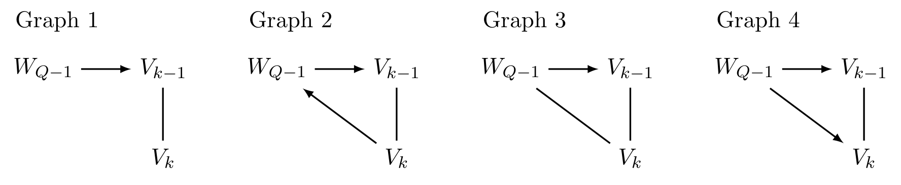
C.3 명제 19 · 22 · 25: DAG 결과들의 대응물
\(\mathcal{G}\)를 노드 집합 \(\mathbf{V}\)를 갖는 인과 maxPDAG, \(\mathbf{X} \subset \mathbf{V}\), \(Y \in \mathbf{V} \setminus \mathbf{X}\)로서 \(Y \in \mathrm{possde}(\mathbf{X},\mathcal{G})\)이고 \(\mathcal{G}\)가 \((\mathbf{X},Y)\)에 대해 순응적이라 하자. 그러면 \((\mathbf{X},Y)\)에 대한 유효 조정집합이 존재할 필요충분조건은 금지 사영 \(\mathcal{G}^{XY}\)에 어떤 노드 사이에도 양방향 엣지가 없는 것이다.
증명은 Lemma 18로 \(Y \in \mathrm{possde} \Rightarrow Y \in \mathrm{de}\)를 얻은 뒤, 명제 6의 증명에서 Lemma 15를 Lemma 20으로 바꾸면 됩니다.
- Lemma 20은 Lemma 15의 maxPDAG 버전으로, \(\mathcal{G}\)가 순응적이고 \(Y \in \mathrm{de}(\mathbf{X},\mathcal{G})\)일 때 유효 조정집합이 존재할 필요충분조건이 \(\mathbf{X} \cap \mathrm{de}(\mathrm{cn}(\mathbf{X},Y,\mathcal{G}),\mathcal{G}) = \emptyset\)임을 말합니다. 증명은 Lemma 21(Perković et al., 2017, Theorem 5.6)에 의존하는데, 이는 정준 조정집합 \(\mathrm{adjust}(\mathbf{X},\mathbf{Y},\mathcal{G}) = \mathrm{possan}(\mathbf{X} \cup \mathbf{Y},\mathcal{G}) \setminus (\mathbf{X} \cup \mathbf{Y} \cup \mathrm{forb}(\mathbf{X},\mathbf{Y},\mathcal{G}))\)가 모든 적정 비인과 확정 상태 경로를 차단할 때에만 유효 조정집합이 존재한다는 결과입니다.
\(\mathcal{G}\)를 인과 maxPDAG로서 \((\mathbf{X},Y)\)에 대해 순응적이고 유효 조정집합이 존재한다고 하자. \([\mathcal{G}] = \{\mathcal{D}_1, \dots, \mathcal{D}_M\}\)이라 하면, 금지 사영 \(\mathcal{G}^{XY}\)는 \(\{\mathcal{D}_1^{XY}, \dots, \mathcal{D}_M^{XY}\}\)의 DAG들을 표현하는 인과 maxPDAG이다.
증명의 골격은 다음과 같습니다.
- 명제 6과 19에 의해 \(\mathcal{G}^{XY}, \mathcal{D}_1^{XY}, \dots, \mathcal{D}_M^{XY}\) 중 어느 것도 양방향 엣지를 갖지 않습니다.
- 사영으로 새로 생기는 엣지들의 집합 \(e(\mathcal{G}), e(\mathcal{D}_1), \dots, e(\mathcal{D}_M)\)은 무향 엣지를 포함하지 않으며, 모두 \(Y\)로 들어가는 유향 엣지입니다. (다른 노드로 들어가면 그 노드가 금지 노드가 되어 모순이고, \(\mathbf{X}\)의 노드로 들어가면 Lemma 20에 위배됩니다.)
- Lemma 23에 의해 \(e(\mathcal{G}) = e(\mathcal{D}_1) = \cdots = e(\mathcal{D}_M) = e\)입니다. 따라서 모든 금지 사영은 원 그래프의 유도 부분그래프를 복사하고 \(e\)를 더하는 방식으로 동일하게 구성됩니다.
- 마지막으로 \(\mathcal{G}^{XY}\)가 Meek 규칙에 대해 닫혀 있음을 보입니다. 예컨대 Rule 1의 좌변 \(\to\,-\)가 \(\mathcal{G}^{XY}\)의 유도 부분그래프라 가정하면, 새 엣지가 전부 \(Y\)로 들어가는 유향 엣지이므로 그 유향 엣지는 \(\to Y -\) 형태여야 합니다. 그러면 \(Y\)가 어떤 노드 \(V\)와 무향 엣지를 공유하게 되는데, 이는 \(V\)가 어떤 \(\mathcal{D} \in [\mathcal{G}]\)에서 금지 노드임을 뜻해 Lemma 24에 위배됩니다. Rule 2–4도 유사한 논증으로 배제됩니다. \(\blacksquare\)
- Lemma 23: \(V_1 \in \mathbf{V} \setminus \mathbf{F}\)에 대해, “어떤 DAG \(\mathcal{D} \in [\mathcal{G}]\)가 모든 비-끝점이 \(\mathbf{F}\)에 속하는 유향 경로 \(V_1 \to \cdots \to Y\)를 포함한다”와 “maxPDAG \(\mathcal{G}\) 자체가 그런 유향 경로를 포함한다”가 동치입니다. 증명은 Lemma 18을 적용하는 것으로, \(\{V_2,\dots,V_K=Y\}\)의 어떤 노드도 \(V_1\)과 무향 엣지를 공유하지 않음을 (순응성과 \(V_1 \notin \mathbf{F}\)로부터) 먼저 보입니다.
- Lemma 24 (HPM19 Lemma E.8): \(\mathcal{G}\)가 \((\mathbf{X},\mathbf{Y})\)에 대해 순응적이고 \(\mathcal{D} \in [\mathcal{G}]\)이면 \(\mathrm{forb}(\mathbf{X},\mathbf{Y},\mathcal{G}) = \mathrm{forb}(\mathbf{X},\mathbf{Y},\mathcal{D})\)입니다. 금지 집합이 동치류 전체에 걸쳐 불변이라는 강력한 성질입니다.
\(\mathcal{G}\)가 \((\mathbf{X},Y)\)에 대해 순응적인 인과 maxPDAG라 하자. 그러면 집합 \(\mathbf{Z}\)가 \(\mathcal{G}\)에서 \((\mathbf{X},Y)\)에 대한 유효 조정집합일 필요충분조건은, \(\mathbf{Z}\)가 금지 사영 \(\mathcal{G}^{XY}\)에서 유효 조정집합인 것이다.
증명은 간결합니다. 명제 8에 의해 각 \(\mathcal{D} \in [\mathcal{G}]\)에서 \(\mathbf{Z}\)가 유효할 필요충분조건은 \(\mathcal{D}^{XY}\)에서 유효한 것이고, 명제 22에 의해 \([\mathcal{G}^{XY}]\)는 정확히 \([\mathcal{G}]\)의 모든 DAG의 금지 사영으로 구성되기 때문입니다.
요약하면, 단일 결과 노드 \(Y\)를 고려하는 한 순응적 인과 maxPDAG의 금지 사영은 인과 DAG의 경우와 매우 유사한 성질을 갖습니다. 사영의 양방향 엣지는 유효 조정집합의 부재를 알리고, 유효 집합이 존재하면 금지 사영은 그 자체가 maxPDAG이며, 인과효과 식별에 관련된 모든 정보를 보존하고, 모든 유효 집합을 원 그래프에서와 마찬가지로 사영에서도 읽어 낼 수 있습니다.
C.4 정의 26과 명제 27: O\(^*\)-집합의 일반화
\(\mathcal{G}\)를 노드 집합 \(\mathbf{V}\)를 갖는 인과 maxPDAG, \(\mathbf{X} \subset \mathbf{V}\), \(Y \in \mathbf{V} \setminus \mathbf{X}\)로서 \(\mathcal{G}\)가 \((\mathbf{X},Y)\)에 대해 순응적이라 하고, \(\mathcal{G}^{XY}\)를 대응하는 금지 사영이라 하자. 그러면
\[ \mathrm{O}^*(\mathbf{X}, Y, \mathcal{G}) = \mathrm{pa}(Y, \mathcal{G}^{XY}) \setminus \mathbf{X} \]
\(\mathcal{G}\)를 인과 maxPDAG, \(\mathbf{X} \subset \mathbf{V}\), \(Y \in \mathbf{V} \setminus \mathbf{X}\)로서 \(Y \in \mathrm{possde}(\mathbf{X},\mathcal{G})\)이고 \(\mathcal{G}\)가 \((\mathbf{X},Y)\)에 대해 순응적이라 하자. \(\mathbf{Z}\)를 \((\mathbf{X},Y)\)에 대한 유효 조정집합, \(\mathbf{O}^* = \mathrm{O}^*(\mathbf{X},Y,\mathcal{G})\)라 하자. 그러면 \(\mathbf{O}^*\)는 \(\mathcal{G}\)에서 \((\mathbf{X},Y)\)에 대한 유효 조정집합이며, \(\mathbf{V}\)가 \(\mathcal{G}\)와 양립하는 선형 인과 모형을 따르면 모든 \(X_i \in \mathbf{X}\)에 대해
\[ \mathrm{a.var}(\hat{\beta}_{y x_i . x_{-i} o^*}) \le \mathrm{a.var}(\hat{\beta}_{y x_i . x_{-i} z}) \]
증명은 \(\mathrm{O}\)와 \(\mathrm{O}^*\)가 같음을 보이고 명제 2와 3을 불러오는 것입니다. Lemma 18로 \(Y \in \mathrm{de}(\mathbf{X},\mathcal{G})\)를 얻은 뒤, Lemma 28(HPM19 Lemma E.7: 순응적 maxPDAG \(\mathcal{G}\)와 \(\mathcal{D} \in [\mathcal{G}]\)에 대해 \(\mathrm{O}(\mathbf{X},\mathbf{Y},\mathcal{D}) = \mathrm{O}(\mathbf{X},\mathbf{Y},\mathcal{G})\))과 명제 10을 결합하면 모든 \(\mathcal{D} \in [\mathcal{G}]\)에 대해
\[ \mathrm{O}(\mathbf{X},Y,\mathcal{G}) = \mathrm{O}(\mathbf{X},Y,\mathcal{D}) = \mathrm{O}^*(\mathbf{X},Y,\mathcal{D}) = \mathrm{O}^*(\mathbf{X},Y,\mathcal{G}) \]
가 따라옵니다. \(\blacksquare\)
부록 D. 4절의 증명 (Appendix D. Proof for Section 4)
명제 11(optimal IDA가 준국소 IDA보다 원소별로 분산이 작거나 같다)의 증명입니다.
설정: 임의의 \(\mathbf{S}_i \subseteq \mathrm{sib}(X,\mathcal{G})\)를 생각합니다. Perković et al. (2017)은 \(\mathbf{P}_i = \mathrm{pa}(X,\mathcal{D}) = \mathbf{S}_i \cup \mathrm{pa}(X,\mathcal{G})\)인 DAG \(\mathcal{D} \in [\mathcal{G}]\)가 존재할 필요충분조건이, \(X\)의 이웃 엣지를 \(\mathbf{P}_i\)에 맞춰 방향짓고 Meek 규칙을 적용했을 때 유효한 maxPDAG \(\mathcal{G}'_i\)가 나오는 것임을 보였습니다. 그렇지 않으면 두 알고리즘 모두 각자의 8행에서 \(\mathbf{S}_i\)를 버리므로, 그런 \(\mathcal{D}\)가 존재한다고 가정해도 무방합니다.
경우 1 — \(Y \in \mathrm{possde}(X,\mathcal{G}'_i)\)인 경우.
이때 \(\hat{\Theta}^O_i = \hat{\beta}_{yx.o_i}\)이며 \(\mathbf{O}_i = \mathrm{O}(X,Y,\mathcal{G}'_i)\)입니다. \(\mathcal{G}'_i\)는 구성상 순응적이므로 부록 C의 Lemma 28에 의해 \(\mathbf{O}_i = \mathrm{O}(X,Y,\mathcal{D})\)입니다.
또한 \(Y \in \mathrm{possde}(X,\mathcal{G}'_i)\)는 \(Y \notin \mathrm{pa}(X,\mathcal{G}'_i)\)를 함의하므로 \(\hat{\Theta}^P_i = \hat{\beta}_{yx.p_i}\)입니다.
명제 2에 의해 \(\mathbf{O}_i\)는 \(\mathcal{D}\)에서 \((X,Y)\)에 대한 유효 조정집합이고, \(\mathbf{P}_i\)도 명백히 그렇습니다. 다변량 가우시안을 가정하므로 \(\hat{\beta}_{yx.o_i}\)와 \(\hat{\beta}_{yx.p_i}\)는 모두 \(\tau_{yx}(\mathcal{D})\)의 일치추정량이며 \(E[\hat{\beta}_{yx.o_i}] = E[\hat{\beta}_{yx.p_i}] = \tau_{yx}(\mathcal{D})\)입니다. → 주장 1 완료.
분산 비교: HPM19 보충자료의 Lemmas E.4와 E.5에 의해 각각
\[\mathbf{P}_i \setminus \mathbf{O}_i \perp\!\!\!\perp Y \mid \{X\} \cup \mathbf{P}_i, \qquad \mathbf{O}_i \setminus \mathbf{P}_i \perp\!\!\!\perp X \mid \mathbf{P}_i\]
가 성립합니다. 이 두 독립성으로 HPM19의 Lemma C.2를 불러오면
\[\sigma_{yy.xo_i} \le \sigma_{yy.xp_i}, \qquad \sigma_{xx.o_i} \ge \sigma_{xx.p_i}\]
를 얻습니다. 다변량 가우시안 분포를 가정하므로
\[ \mathrm{a.var}(\hat{\beta}_{yx.o_i}) = \frac{\sigma_{yy.xo_i}}{\sigma_{xx.o_i}} \le \frac{\sigma_{yy.xp_i}}{\sigma_{xx.p_i}} = \mathrm{a.var}(\hat{\beta}_{yx.p_i}) \]
→ 주장 2 완료.
- \(\mathbf{P}_i \setminus \mathbf{O}_i \perp\!\!\!\perp Y \mid \{X\} \cup \mathbf{P}_i\): \(\mathbf{P}_i\)에는 있고 \(\mathbf{O}_i\)에는 없는 변수들은 \(Y\)에 대해 아무 정보를 더하지 않습니다. 즉 그것들을 빼도 결과의 잔차분산 \(\sigma_{yy.x\cdot}\)이 나빠지지 않습니다 → 분자가 줄어듭니다.
- \(\mathbf{O}_i \setminus \mathbf{P}_i \perp\!\!\!\perp X \mid \mathbf{P}_i\): \(\mathbf{O}_i\)에는 있고 \(\mathbf{P}_i\)에는 없는 변수들은 \(X\)에 대해 아무 정보를 더하지 않습니다. 즉 그것들을 넣어도 처치의 잔차분산 \(\sigma_{xx.\cdot}\)이 줄어들지 않습니다 → 분모가 유지됩니다.
§1.2의 callout에서 정리한 “분자는 줄이고 분모는 지킨다”는 직관이 여기서 정확한 형태로 확인됩니다.
경우 2 — \(Y \notin \mathrm{possde}(X,\mathcal{G}'_i)\)인 경우.
- 그러면 \(Y \notin \mathrm{de}(X,\mathcal{D})\)이므로 \(\tau_{yx}(\mathcal{D}) = 0\)입니다.
- optimal IDA는 \(\hat{\Theta}^O_i = 0\)을 반환하므로 \(\mathrm{a.var}(\hat{\Theta}^O_i) = 0\)입니다.
- 준국소 IDA 쪽은 두 갈래입니다.
- \(Y \in \mathrm{pa}(X,\mathcal{G}'_i)\)이면 \(\hat{\Theta}^P_i = 0\)이므로 \(\mathrm{a.var}(\hat{\Theta}^P_i) = 0\)으로 같습니다.
- \(Y \notin \mathrm{possde}(X,\mathcal{G}'_i) \cup \mathrm{pa}(X,\mathcal{G}'_i)\)이면 \(\hat{\Theta}^P_i = \hat{\beta}_{yx.p_i}\)이고 부모집합의 성질상 \(E[\hat{\beta}_{yx.p_i}] = 0\)입니다. 그러나 이 경우 명백히 \(\mathrm{a.var}(\hat{\Theta}^P_i) > 0\)입니다. \(\blacksquare\)
경우 2가 Remark 12(2)의 근거입니다. 참값이 0임을 그래프가 이미 알려 주는데도 준국소 IDA는 굳이 회귀를 돌려 분산이 양수인 추정치를 내놓는 반면, optimal IDA는 분산 0의 완벽한 추정치를 반환합니다.
부록 E. 바이올린 플롯 (Appendix E. Violin Plots)
§4.5에서 두 시나리오만 보여 준 바이올린 플롯의 전체 집합입니다.
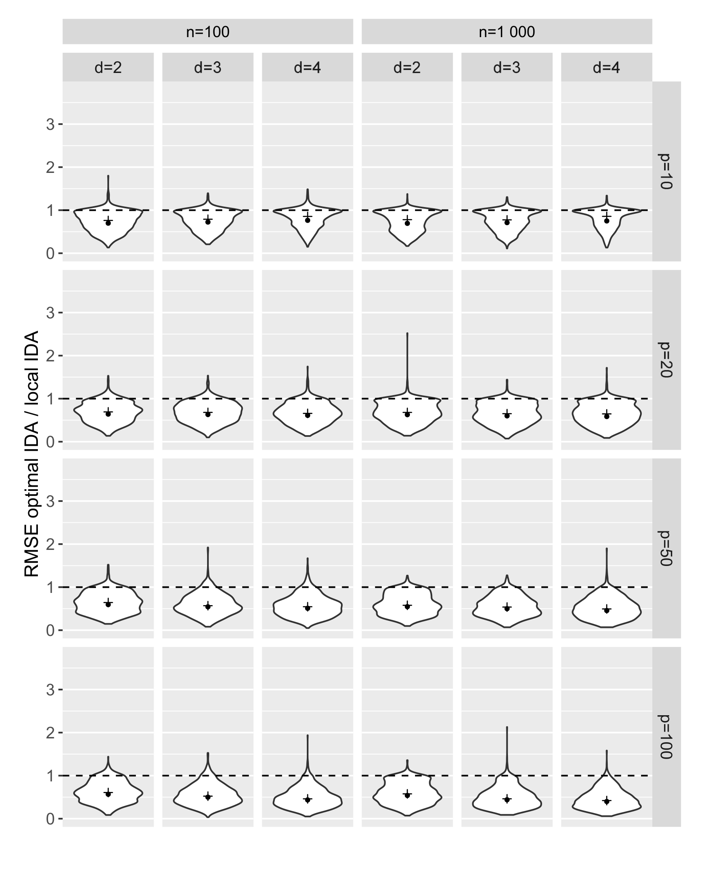
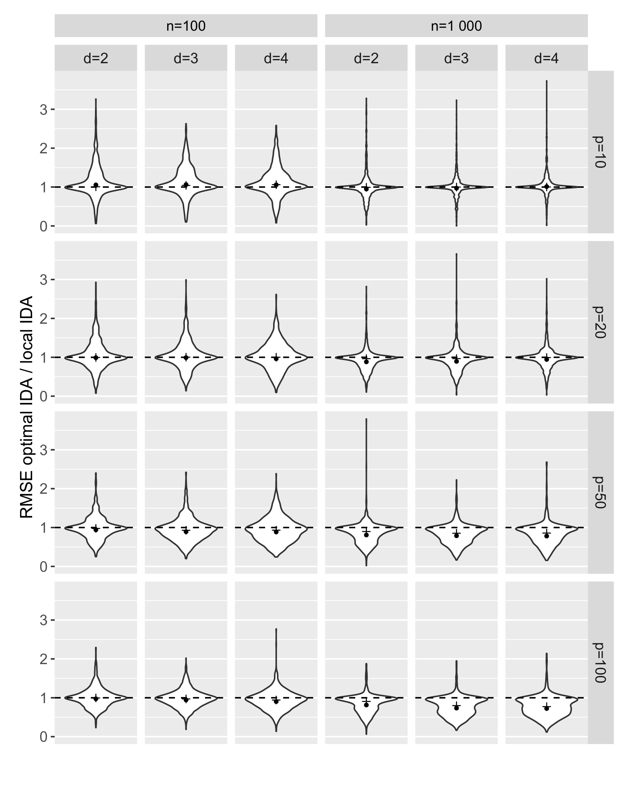
정리하며 (Closing Remarks)
이 논문의 논리 사슬을 한 장으로 요약하면 다음과 같습니다.
| 단계 | 내용 | 근거 |
|---|---|---|
| ① 긴장 관계 설정 | \(\mathrm{pa}(X)\)는 유효하지만 비효율적이고, \(\mathrm{pa}(Y)\)는 효율적이지만 매개변수를 품어 유효하지 않다 | §3.1, Figure 1의 FTW |
| ② 무대 옮기기 | 금지 노드를 잠재 사영으로 주변화한 금지 사영 \(\mathcal{D}^{XY}\)를 정의한다 | 정의 4, 정의 5 |
| ③ 정보 보존 확인 | 사영이 조정 관련 정보를 전부 보존한다 — 유효성 동치, 존재 판정, 단일 \(Y\)면 DAG | 명제 6, 7, 8 |
| ④ 주 결과 | 그 그래프에서 \(\mathbf{Y}\)의 부모집합이 곧 O-집합이다 | 정의 9, 명제 10 (via Lemma 16) |
| ⑤ 동치류로 확장 | 순응적 maxPDAG에서도 같은 구성이 성립한다 (단일 \(Y\) 한정) | 정의 17, 명제 19·22·25·27, Lemma 18 |
| ⑥ 비순응 그래프로 확장 | Meek 규칙이 \(X\) 주변 방향만으로 금지 노드 전체를 드러내므로, O-집합도 준국소적으로 결정된다 → optimal IDA | §4.3, Algorithm 2, Lemma 18 |
| ⑦ 효율 보장 | 원소별로 기댓값은 같고 분산은 작거나 같다 (가우시안 가정) | 명제 11, 부록 D |
| ⑧ 실증 | 참 CPDAG에서는 24개 시나리오 전부 우세(\(r\) 최소 0.40), 추정 CPDAG에서는 우위가 잠식됨 | §4.5, Tables 1–3, Figures 6·7·10·11 |
| ⑨ 비그래프적 연결 | 출발 집합이 유효하고 O-집합을 포함하면, 오라클 후진 선택의 출력이 정확히 O-집합 | 명제 14 (b) |
| ⑩ 남은 한계 | 잠재변수가 있으면 최적 집합이 아예 존재하지 않을 수 있고, 그 필요충분조건은 미해결 | §6.4, Smucler et al. (2020) |
개인적인 감상 몇 가지를 덧붙입니다.
- 가장 인상적인 지점은 “정의를 바꾸지 않고 그래프를 바꿨다”는 발상입니다. HPM19의 \(\mathrm{pa}(\mathrm{cn}) \setminus \mathrm{forb}\)는 옳지만 왜 그것인지를 말해 주지 않는 정의였습니다. 이 논문은 그 식을 더 정교하게 다듬는 대신, 금지 노드를 아예 그래프에서 지워 버리면 뺄셈이 필요 없어진다는 방향을 택했습니다. 그러자 O-집합이 \(\mathrm{pa}(Y)\)라는, 통계학자가 100년 동안 써 온 가장 익숙한 대상으로 환원됩니다. 논문의 실질적 기술 내용은 Lemma 16 — “사영으로 새로 생기는 엣지는 전부 \(Y\)로 들어간다” — 한 줄에 압축되어 있고, 나머지는 이 관찰의 귀결입니다.
- 금지 사영이 부산물이 아니라 도구라는 주장도 설득력이 있습니다. 명제 8(유효성 동치)과 명제 7(단일 \(Y\)면 DAG)이 있기 때문에, 실무자는 원래의 복잡한 인과 그래프 대신 금지 사영만 그려 놓고 조정집합에 관한 모든 질문에 답할 수 있습니다. “조정해서는 안 되는 변수는 애초에 그림에서 지워 놓는다”는 것은 인지적 부담을 줄이는 좋은 설계입니다. 특히 Figure 1과 Figure 3을 나란히 보면 12개 노드 그래프가 7개 노드로 줄면서도 조정에 관한 정보는 전혀 잃지 않았음을 확인할 수 있습니다.
- 준국소성 논증이 반전입니다. 정의 1만 보면 O-집합은 인과 노드 · 그 부모 · 금지 노드를 모두 알아야 하는 철저히 전역적인 대상으로 보입니다. 그런데 \(X\) 주변의 방향만 정하면 Meek 규칙이 나머지를 전부 결정해 준다는 관찰(Lemma 18) 하나로 그 인상이 뒤집힙니다. 다만 Remark 12(1)이 정직하게 인정하듯 CPDAG에서 준국소 IDA는 완전히 국소화할 수 있지만 optimal IDA는 그럴 수 없다는 비대칭이 남습니다. optimal IDA는 7행의 maxPDAG 구성에 구조적으로 묶여 있습니다.
- 모의실험이 논문의 주장을 깎아내리는 방향으로도 정직합니다. \(r\)과 \(r^*\)를 나란히 보고한 것 — 그리고 최선(A)뿐 아니라 최악(B) 시나리오도 Figure 6에 실은 것 — 은 흔치 않은 태도입니다. Table 2에서 \(p=10\) 행이 전부 1을 넘는다는 사실, 즉 작은 그래프를 추정해서 쓰면 optimal IDA가 오히려 손해라는 결과를 숨기지 않았습니다. 저자들이 제시한 해석 — O-집합이 \(\mathrm{pa}(X)\)보다 그래프 오차에 더 취약하다 — 도 그럴듯한데, O-집합이 \(Y\) 쪽 구조와 매개 경로 전체에 의존하는 반면 \(\mathrm{pa}(X)\)는 \(X\)의 국소 이웃만 보기 때문일 것입니다. 정보를 더 많이 쓰는 방법이 오차에도 더 많이 노출된다는 일반적 교훈의 한 사례로 읽힙니다.
- §5가 가장 실무적인 절이라고 생각합니다. 회귀 분석에서 관성적으로 돌리던 후진 선택이나 Lasso가 사실 O-집합을 겨냥하고 있었다는 재해석은 깔끔합니다. 그러나 그 대가로 붙는 조건 — 출발 집합 \(\mathbf{Z}\)가 유효 조정집합이어야 하고 O-집합을 포함해야 한다 — 이 경험적으로 검증 불가능하다는 점을 저자들이 반복해서 못 박습니다. 즉 이 절의 결론은 “자동 변수선택을 써도 된다”가 아니라 “자동 변수선택이 인과적으로 의미를 가지려면 얼마나 많은 사전 지식이 이미 필요한지”를 정확히 계량한 것에 가깝습니다.
- 한계도 분명합니다. 이 논문 전체가 잠재변수 없음을 가정하고 있고, §6.4가 인정하듯 숨은 변수가 있으면 점근적으로 최적인 집합이 아예 존재하지 않을 수 있습니다. 또한 명제 11은 가우시안 오차를 요구하는데, 비가우시안이면 IDA가 순회하는 “참이 아닌 DAG의 조정집합”들에 대해 선형성이 보장되지 않아 부등식이 깨집니다. 그리고 Remark 13이 지적하듯 인과 탐색 이후의 표준오차 추정 방법이 아직 없다는 것은, optimal IDA의 추정치를 실제 논문에 신뢰구간과 함께 보고하기 어렵다는 뜻입니다. 최적성의 이론이 아무리 깔끔해도 불확실성 정량화가 빠져 있으면 실무 적용에는 구멍이 남습니다.
주요 참고문헌 (Selected References)
- Andersson, S. A., Madigan, D., & Perlman, M. D. (1997). A characterization of Markov equivalence classes for acyclic digraphs. The Annals of Statistics, 25(2), 505–541. (CPDAG)
- Brookhart, M. A., Schneeweiss, S., Rothman, K. J., Glynn, R. J., Avorn, J., & Stürmer, T. (2006). Variable selection for propensity score models. American Journal of Epidemiology, 163(12), 1149–1156. (결과 지향 전략)
- Chernozhukov, V., Chetverikov, D., Demirer, M., Duflo, E., Hansen, C., Newey, W., & Robins, J. (2018). Double/debiased machine learning for treatment and structural parameters. The Econometrics Journal, 21(1), C1–C68. (RAL 부류의 예)
- Chickering, D. M. (2002). Optimal structure identification with greedy search. JMLR, 3, 507–554. (GES, §4.5 모의실험의 구조 학습기)
- de Luna, X., Waernbaum, I., & Richardson, T. S. (2011). Covariate selection for the nonparametric estimation of an average treatment effect. Biometrika, 98(4), 861–875. (최소 조정집합 전략)
- Guo, F. R., & Perković, E. (2020). Efficient least squares for estimating total effects under linearity and causal sufficiency. arXiv:2008.03481v2. (조정 이외 전략의 효율성)
- Hahn, J. (1998). On the role of the propensity score in efficient semiparametric estimation of average treatment effects. Econometrica, 66, 315–331.
- Henckel, L., Perković, E., & Maathuis, M. H. (2019). Graphical criteria for efficient total effect estimation via adjustment in causal linear models. arXiv:1907.02435. (HPM19 — O-집합의 원 출처, 정의 1·명제 2·3(a)·Lemmas C.2/E.4/E.5/E.7/E.8)
- Hirano, K., Imbens, G. W., & Ridder, G. (2003). Efficient estimation of average treatment effects using the estimated propensity score. Econometrica, 71(4), 1161–1189.
- Kalisch, M., Mächler, M., Colombo, D., Maathuis, M. H., & Bühlmann, P. (2012). Causal inference using graphical models with the R package pcalg. Journal of Statistical Software, 47(11), 1–26. (optimal IDA의 구현처)
- Maathuis, M. H., Kalisch, M., & Bühlmann, P. (2009). Estimating high-dimensional intervention effects from observational data. The Annals of Statistics, 37(6A), 3133–3164. (local IDA, Algorithm 1)
- Meek, C. (1995). Causal inference and causal explanation with background knowledge. UAI-95, 403–410. (Meek의 방향 결정 규칙, Figure 8)
- Nandy, P., Maathuis, M. H., & Richardson, T. S. (2017). Estimating the effect of joint interventions from observational data in sparse high-dimensional settings. The Annals of Statistics, 45(2), 647–674. (joint IDA)
- Pearl, J. (2009). Causality: Models, Reasoning, and Inference (2nd ed.). Cambridge University Press. (뒷문 기준, “처치의 부모집합은 유효 조정집합”)
- Perković, E. (2020). Identifying causal effects in maximally oriented partially directed acyclic graphs. UAI-20, ID 229. (비순응성 ⟺ 인과효과의 비유일성)
- Perković, E., Kalisch, M., & Maathuis, M. H. (2017). Interpreting and using CPDAGs with background knowledge. UAI-17, ID 120. (maxPDAG, semi-local IDA, Lemma 21)
- Perković, E., Textor, J., Kalisch, M., & Maathuis, M. H. (2018). Complete graphical characterization and construction of adjustment sets in Markov equivalence classes of ancestral graphs. JMLR, 18(220), 1–62. (GAC, Lemma 15)
- Richardson, T. (2003). Markov properties for acyclic directed mixed graphs. Scandinavian Journal of Statistics, 30(1), 145–157. (m-분리)
- Richardson, T. S., Evans, R. J., Robins, J. M., & Shpitser, I. (2017). Nested Markov properties for acyclic directed mixed graphs. arXiv:1701.06686. (잠재 사영의 분리 보존)
- Rotnitzky, A., & Smucler, E. (2020). Efficient adjustment sets for population average treatment effect estimation in non-parametric causal graphical models. JMLR, 21(188), 1–86. (RS20 — 명제 3(b), 최적 최소 집합 ⊆ O-집합)
- Shimizu, S., Hoyer, P. O., Hyvärinen, A., & Kerminen, A. (2006). A linear non-Gaussian acyclic model for causal discovery. JMLR, 7, 2003–2030. (LiNGAM)
- Shpitser, I., Evans, R. J., Richardson, T. S., & Robins, J. M. (2014). Introduction to nested Markov models. Behaviormetrika, 41(1), 3–39. (잠재 사영, 정의 4)
- Shpitser, I., VanderWeele, T., & Robins, J. M. (2010). On the validity of covariate adjustment for estimating causal effects. UAI-10, 527–536. (GAC의 계보)
- Smucler, E., Sapienza, F., & Rotnitzky, A. (2020). Efficient adjustment sets in causal graphical models with hidden variables. arXiv:1912.00306. (잠재변수 하 최적 집합 존재의 충분조건)
- Tibshirani, R. (1996). Regression shrinkage and selection via the lasso. JRSS-B, 58(1), 267–288. (Lasso)
- van Kampen, D. (2014). The SSQ model of schizophrenic prodromal unfolding revised. European Psychiatry, 29(7), 437–448. (Figure 1의 DAG 출처)
- Verma, T. S., & Pearl, J. (1990). Equivalence and synthesis of causal models. Technical Report R-150, UCLA. (잠재 사영, 마르코프 동치)
- Witte, J., & Didelez, V. (2019). Covariate selection strategies for causal inference: Classification and comparison. Biometrical Journal, 61(5), 1270–1289. (‘결과 지향적’ 전략의 명명, 사전 지식의 불가피성)
- Zhao, P., & Yu, B. (2006). On model selection consistency of Lasso. JMLR, 7, 2541–2563. (Lasso의 선택 일치성)